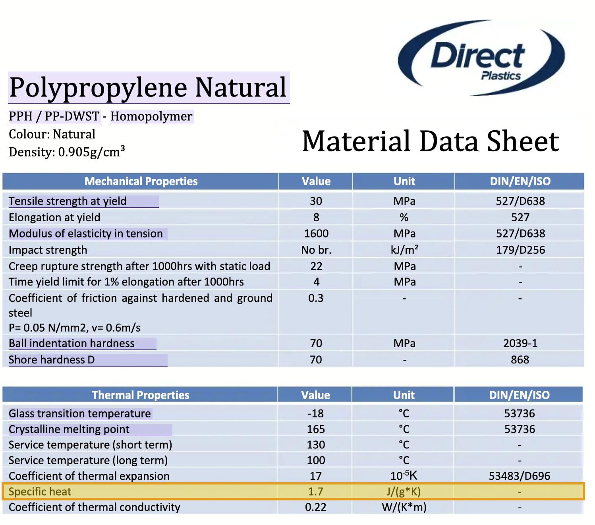
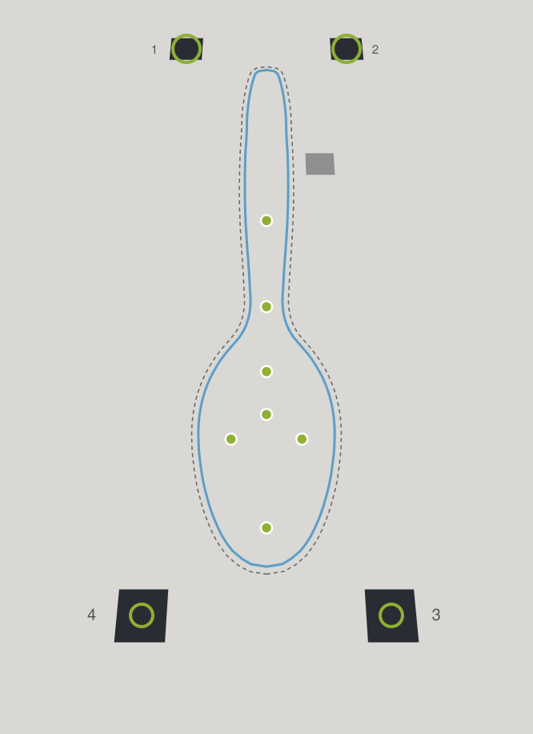
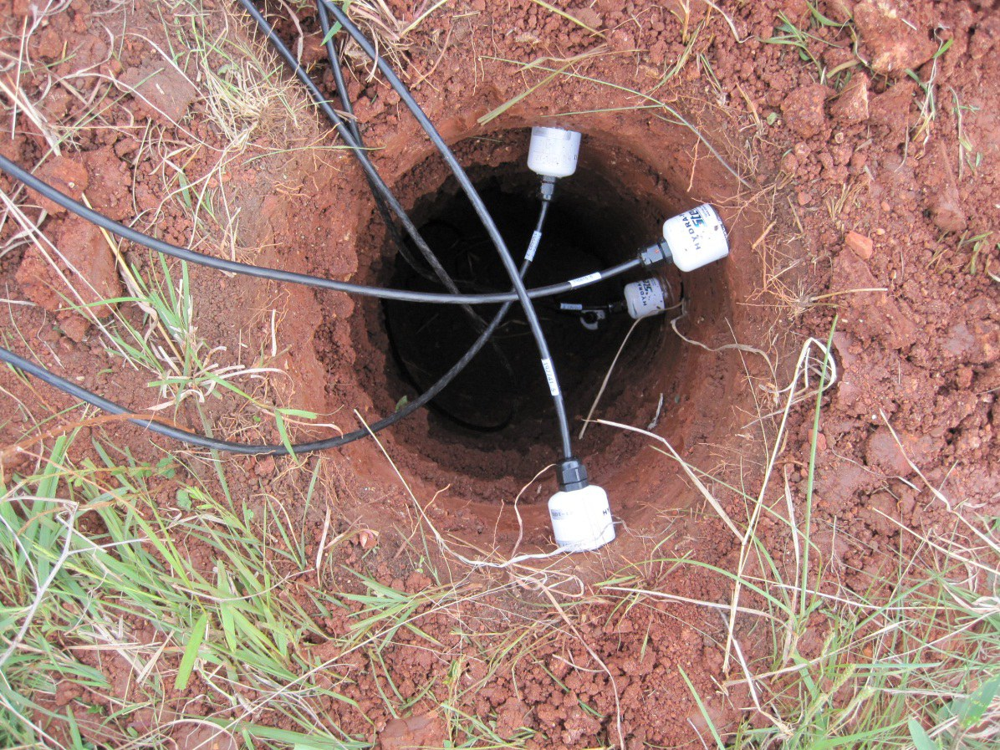
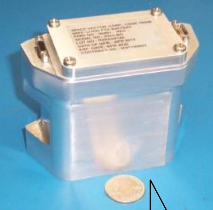
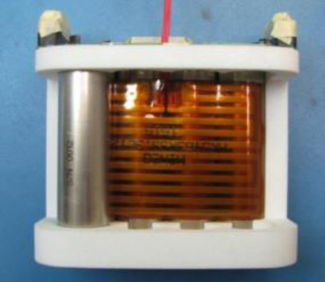

<!DOCTYPE html>
<html lang="en">
<head>
<!-- built by workshop_build.py: engine in ../assets/, media re-encoded for the room. -->
<script>window.__ICON_BASE = "../assets/icons/";</script>
<meta charset="utf-8">
<meta name="viewport" content="width=device-width, initial-scale=1">
<title>Workshop 5 · Cool Hand Luke · Data Analyzer</title>
<link rel="stylesheet" href="../assets/analyzer.css">
<!-- Math: `$…$` LaTeX, rendered by the SAME vendored MathJax the lecture decks use. Loaded BEFORE the
     engine and NOT async, so `MathJax.startup.promise` exists by the time the first step renders. -->
<script src="../assets/mathjax-config.js"></script>
<script src="../assets/tex-svg.js"></script>
</head>
<body>
<!-- ============================================================================
   Workshop 5 · Cool Hand Luke — thin deck shell. The NARR below is WRITTEN FROM THE MANIFEST
   (Workshop5-CoolHandLuke.md, the source of record) by gen/seed_deck.py. Edit wording in the manifest, then
   re-run the seed (or `sync_lead.py --write Workshop5` for prose alone); check with check_all.sh.
   First drafted 2026-11-12. Three things warming up, two ideas:
     Part 1, a color-changing spoon (phone camera, live): Class U's Newton cooling, measured with Select Point and
       Slope only (2026-11-13). Four runs, one thing changed at a time; each gives a rate of warming at about 13 °C,
       and m c_p times it is watts. One drawing after the metal run shows that run as a piece of an exponential.
     Part 2, a NASA battery pack with its heater on in a -10 °C chamber (preloaded): Fit Exponential with the
       plateau free; heat passed per kelvin from the plateau, heat stored per kelvin from tau.
     Part 3, soil temperature at Asheville NC (NOAA USCRN, preloaded): what 5 cm does to the daily wave, 95 cm
       does to the yearly one. 366 times the time, about 20 times the depth: Class P's l ~ sqrt(D tau).
   LIVE CAPTURE: the `cam:` steps (s-setup, s-control, s-blow, s-metal, s-drop) are run by
   ../assets/spoon-capture.js: a QR code, the live picture with the template's outline over it,
   Save warm and cold colors, then Record until bowl and handle are through the band (or a cap) and Try again / Accept.
   Sources, processing and worked numbers: data/README.md; the baked copies: gen/make_media.py -> media/.
============================================================================ -->
<script>
const CONFIG = { title: "Workshop 5 · Cool Hand Luke", tools: ["point","slope","fitexp"], pinTools: true,
                 // The four spoon runs are "color": 0 = the saved cold color, 1 = the saved warm color. `temp` makes that a
                 // temperature too, T = lo + band × color (12 °C to 17 °C): a second axis in °C, and Fit Exponential
                 // pinned to the room's temperature the group typed (`roomKey`). `overlay` draws the slot's three
                 // columns (bowl, handle, tip) at once. `yFix` freezes every spoon plot at color 0 to 1 (readings are pinned to that range) so runs compare by eye;
                 // `overlayColors`: bowl, handle, tip (teal, not amber: amber means a reference line), All. The Slope steps draw
                 // white guide lines at 12.5 and 13.5 °C instead of a band (step `yGuides`). (Daniel, 2026-11-13)
                 panels: [{key:"ctl",   label:"Spoon — control",                yRange:[0,0.6], overlay:true, temp:{lo:12,band:5,room:21,roomKey:"s_room"}, yFix:[0,1], overlayColors:["--mma-ltblue","--mma-mauve","#3fb6a8","--mma-purple"]},
                          {key:"blow",  label:"Spoon — blown on",               yRange:[0,0.6], overlay:true, temp:{lo:12,band:5,room:21,roomKey:"s_room"}, yFix:[0,1], overlayColors:["--mma-ltblue","--mma-mauve","#3fb6a8","--mma-purple"]},
                          {key:"metal", label:"Spoon — on a cold metal spoon",  yRange:[0,0.6], overlay:true, temp:{lo:12,band:5,room:21,roomKey:"s_room"}, yFix:[0,1], overlayColors:["--mma-ltblue","--mma-mauve","#3fb6a8","--mma-purple"]},
                          {key:"drop",  label:"Spoon — water drop in the bowl", yRange:[0,0.6], overlay:true, temp:{lo:12,band:5,room:21,roomKey:"s_room"}, yFix:[0,1], overlayColors:["--mma-ltblue","--mma-mauve","#3fb6a8","--mma-purple"]},
                          {key:"batt",  label:"Battery pack — heater on, chamber at −10 °C"},
                          {key:"day5",  label:"Soil, one week — 5 cm down"},
                          {key:"day10", label:"Soil, one week — 10 cm down"},
                          {key:"day100", label:"Soil, one week — 100 cm down"},
                          {key:"yr5",   label:"Soil, 2024 — 5 cm down"},
                          {key:"yr10",  label:"Soil, 2024 — 10 cm down"},
                          {key:"yr100", label:"Soil, 2024 — 100 cm down"}],
                 // LIVE CAPTURE: ../assets/spoon-capture.js. One picture a second at 640 px.
                 cam: { camUrl: "https://danbenquinn.github.io/classes/spoon/cam.html", fps: 1, size: 640 },
                 // The spoon as a rough thermometer (Daniel, 2026-11-12/13): it changes color over `band` °C starting at
                 // `lo`. `room` is only the fallback for the temperature the group types; `cp` is an assumed specific
                 // heat for the plastic, J/(g·K). The panels' `temp:` above must agree with lo and band.
                 spoon: { lo: 12, band: 5, room: 21, cp: 1.7 },
                 // `checkKind: calc` (engine): boxes that follow by arithmetic from earlier ones. The battery's heater
                 // is 23.5 W and its chamber -10 °C (slides 12 and 18); tau was typed in minutes.
                 calc: { b_G: { f: a => 23.5/(a.b_T+10), tol: 0.03,
                                slips: [{ f: a => 23.5/a.b_T, say: "The chamber is at $-10$ °C, not 0 °C: the plateau sits (plateau + 10) kelvins above it." },
                                        { f: a => (a.b_T+10)/23.5, say: "That is kelvins per watt. Turn it over: watts per kelvin." }] },
                         // the battery, back to delta-Q = m c_p delta-T: 23.5 W for the first 2 min, -10 -> -3 C; then tau = stored/passed
                         b_Q2: { f: a => 23.5*120, tol: 0.02,
                                 slips: [{ f: a => 23.5*2, say: "A watt is a joule per SECOND: 2 minutes is 120 s." }] },
                         b_cp: { f: a => a.b_Q2/(730*7), tol: 0.03,
                                 slips: [{ f: a => a.b_Q2/7, say: "That is the whole pack's heat stored per degree, $m\\,c_p$. Specific heat is per gram: divide by the mass." },
                                         { f: a => a.b_Q2/(0.73*7), say: "That is per kilogram. The box wants J/(g·K): use the mass in grams." },
                                         { f: a => a.b_Q2/(730*3), say: "The pack climbed from $-10$ °C to $-3$ °C: that is 7 degrees, not 3." }] },
                         b_tau2: { f: a => a.b_cp*730/a.b_G/60, tol: 0.04,
                                   slips: [{ f: a => a.b_cp*730/a.b_G, say: "That is in seconds. Divide by 60 for minutes." },
                                           { f: a => a.b_cp/a.b_G/60, say: "Heat stored per degree is $m\\,c_p$: multiply your $c_p$ by the pack's 730 g first." },
                                           { f: a => a.b_G/(a.b_cp*730)/60, say: "Stored over passed: put $m\\,c_p$ on top." }] },
                         s_Q: { f: a => a.s_m*1.7*a.s_room, tol: 0.02,
                                slips: [{ f: a => a.s_m*1.7, say: "That is the heat for one kelvin. The spoon has to climb from 0 °C to the room." }] },
                         // the spoon's watts: m c_p times a rate of warming read with Slope at about 13 °C (°C/s)
                         s_Pc: { f: a => a.s_m*1.7*a.s_rc, tol: 0.04,
                                 slips: [{ f: a => a.s_m*a.s_rc, say: "That is the mass times the rate. Use the heat stored per kelvin, $m\\,c_p$, from the start of Part 1." }] },
                         s_Pb: { f: a => a.s_m*1.7*a.s_rb, tol: 0.04, slips: [{ f: a => a.s_m*a.s_rb, say: "Use the heat stored per kelvin, $m\\,c_p$, not the mass alone." }] },
                         s_Pm: { f: a => a.s_m*1.7*a.s_rm, tol: 0.04, slips: [{ f: a => a.s_m*a.s_rm, say: "Use the plastic spoon's heat stored per kelvin, $m\\,c_p$, not the mass alone." }] },
                         // the drop: heat per degree per volume, water over polypropylene; and l^2/D for 10 cm of spoon, in hours
                         s_wr: { f: a => (1.00*4.18)/(0.905*1.7), tol: 0.03,
                                 slips: [{ f: a => 4.18/1.7, say: "That compares grams, not cubic millimeters. Multiply each $c_p$ by its density first." }] },
                         s_dif: { f: a => 0.10*0.10/1.4e-7/3600, tol: 0.05,
                                  slips: [{ f: a => 0.10*0.10/1.4e-7, say: "That is in seconds. Divide by 3600 for hours." },
                                          { f: a => 10*10/1.4e-7/3600, say: "Put the distance in meters: 10 cm is 0.10 m." }] },
                         // the soil's D by scaling, D ~ l^2/(delay), typed in units of 1e-7 m^2/s
                         g_Dd: { f: a => 0.05*0.05/(a.g_dlag*3600)/1e-7, tol: 0.05,
                                 slips: [{ f: a => 0.05*0.05/a.g_dlag/1e-7, say: "Your delay is in hours. Convert it to seconds." },
                                         { f: a => 0.10*0.10/(a.g_dlag*3600)/1e-7, say: "Use the EXTRA depth the heat soaked, 10 − 5 = 5 cm, not 10 cm." },
                                         { f: a => 5*5/(a.g_dlag*3600)/1e-7, say: "Put the depth in meters: 5 cm is 0.05 m." }] },
                         g_Dy: { f: a => 0.95*0.95/(a.g_ylag*86400)/1e-7, tol: 0.05,
                                 slips: [{ f: a => 0.95*0.95/a.g_ylag/1e-7, say: "Your delay is in days. Convert it to seconds: 86,400 s in a day." },
                                         { f: a => 1/(a.g_ylag*86400)/1e-7, say: "Use the EXTRA depth, 100 − 5 = 95 cm, not 100 cm." }] } },
                 // GROUP + SUBMIT: ../assets/group-submit.js. `roster` is FINGERPRINTS of the class
                 // roster, written by lab-suite/accel-prototype/roster_hashes.py — never edit it by hand. (Copied from Workshop 4.)
                 group: { max: 4, salt: "mae2501-f26-ws", iter: 20000, roster: ["0b82492042193f18","0eb4cde71b2fb350","1b87a1469f78c15d","1c075206ce780c13","1dc978c54240a920","31e3dc5d829e0c7d","42a6d88e3820f296","48607c7aa1afb88d","4bab81bfd682c734","4efa20178f7a142c","52b1016fdcbf8281","794f8794b7afcca1","7a6ac6e85ef1a2ae","7dc2bc72b8cc59a5","8260dfe007fcf9b6","84b4fb0aee810c95","88cfdb86e0ddc433","93bfcd2cd39212d9","9db6af834ca59e95","a1f2b59a64adc0f1","ac393c263c3a6d23","b0adbaf4126e553b","b156f8b6a82b0165","cedd6528729ebea8","cf8e1a095b8b3d77","cfbf44094155c4c4","d4ba170070f7527b","d848e63b58359eff","dc447dc74e9187c1","dffa92c8d9bc8f5c","e0778b13f34b9909","f3c10ad0714ff891"] },
                 submit: { workshop: "W5-CoolHandLuke", dataWord: "spoon" } };
const INSTRUCTOR = false;
const DEMO_CSV = "\"Time (s)\",\"Bowl color (0 cold to 1 warm)\",\"Handle color (0 cold to 1 warm)\",\"Tip color (0 cold to 1 warm)\",\"All color (0 cold to 1 warm)\"\n0,0,0.006,0,0.001\n1,0,0,0.009,0.002\n2,0.01,0,0,0.005\n3,0.03,0.007,0.024,0.02\n4,0.033,0,0.035,0.027\n5,0.052,0,0.033,0.034\n6,0.052,0,0.036,0.044\n7,0.077,0.011,0.048,0.061\n8,0.076,0.02,0.057,0.074\n9,0.079,0.008,0.059,0.071\n10,0.066,0,0.054,0.067\n11,0.074,0,0.049,0.068\n12.1,0.074,0,0.06,0.072\n13.1,0.077,0,0.049,0.068\n14.1,0.076,0,0.065,0.067\n15.1,0.116,0,0.073,0.083\n16.1,0.089,0,0.045,0.066\n17.1,0.095,0,0.057,0.065\n18.1,0.109,0,0.058,0.082\n19.1,0.116,0,0.056,0.077\n20.1,0.132,0,0.062,0.084\n21.1,0.116,0,0.06,0.082\n22.1,0.124,0,0.074,0.088\n23.1,0.163,0,0.11,0.117\n24.1,0.183,0,0.114,0.124\n25.1,0.176,0,0.115,0.119\n26.1,0.209,0.007,0.134,0.139\n27.1,0.231,0.01,0.154,0.16\n28.1,0.235,0.017,0.163,0.165\n29.1,0.245,0.024,0.181,0.174\n30.1,0.261,0.038,0.204,0.192\n31.1,0.285,0.043,0.219,0.209\n32.1,0.289,0.053,0.22,0.21\n33.1,0.291,0.053,0.231,0.213\n34.1,0.279,0.045,0.226,0.198\n35.1,0.286,0.027,0.24,0.206\n36.1,0.281,0.028,0.229,0.196\n37.1,0.273,0.017,0.227,0.193\n38.1,0.259,0.021,0.217,0.186\n39.2,0.295,0.033,0.247,0.205\n40.2,0.284,0.031,0.235,0.205\n41.2,0.285,0.026,0.248,0.212\n42.2,0.308,0.036,0.264,0.223\n43.2,0.329,0.048,0.291,0.238\n44.2,0.352,0.067,0.317,0.258\n45.2,0.35,0.068,0.318,0.259\n46.2,0.357,0.066,0.323,0.264\n47.2,0.385,0.09,0.345,0.291\n48.2,0.391,0.098,0.344,0.298\n49.2,0.416,0.12,0.381,0.314\n50.2,0.421,0.114,0.396,0.327\n51.2,0.434,0.124,0.414,0.337\n52.2,0.434,0.124,0.419,0.343\n53.2,0.448,0.143,0.439,0.362\n54.2,0.455,0.139,0.435,0.367\n55.2,0.47,0.141,0.454,0.376\n56.2,0.474,0.148,0.459,0.38\n57.2,0.476,0.147,0.472,0.387\n58.2,0.48,0.165,0.49,0.395\n59.2,0.488,0.162,0.487,0.394\n60.2,0.481,0.168,0.495,0.395\n61.2,0.487,0.178,0.5,0.404\n62.2,0.493,0.177,0.512,0.408\n63.2,0.487,0.175,0.51,0.404\n64.3,0.483,0.174,0.508,0.402\n65.3,0.496,0.186,0.511,0.413\n66.3,0.501,0.193,0.533,0.424\n67.3,0.498,0.187,0.523,0.422\n68.3,0.502,0.208,0.549,0.435\n69.3,0.493,0.191,0.52,0.419\n70.3,0.511,0.211,0.576,0.445\n71.3,0.528,0.222,0.594,0.458\n72.3,0.524,0.22,0.594,0.456\n73.3,0.532,0.231,0.608,0.463\n74.3,0.526,0.232,0.602,0.468\n75.3,0.528,0.235,0.614,0.471\n76.3,0.558,0.245,0.628,0.49\n77.3,0.531,0.242,0.617,0.484\n78.3,0.548,0.244,0.635,0.503\n79.3,0.543,0.246,0.64,0.501\n80.3,0.579,0.261,0.666,0.522\n81.3,0.606,0.276,0.67,0.532\n82.3,0.563,0.264,0.674,0.523\n83.3,0.572,0.26,0.661,0.517\n84.3,0.609,0.278,0.679,0.54\n85.3,0.578,0.277,0.673,0.531\n86.3,0.607,0.289,0.684,0.545\n87.3,0.583,0.289,0.676,0.545\n88.3,0.609,0.315,0.689,0.553\n89.4,0.627,0.319,0.692,0.559\n90.4,0.628,0.324,0.693,0.571\n91.4,0.631,0.324,0.696,0.571\n92.4,0.629,0.328,0.698,0.574\n93.4,0.628,0.327,0.698,0.565\n94.4,0.628,0.335,0.698,0.568\n95.4,0.635,0.339,0.706,0.58\n96.4,0.631,0.342,0.71,0.583\n97.4,0.627,0.338,0.709,0.577\n98.4,0.619,0.343,0.707,0.571\n99.4,0.624,0.345,0.702,0.576\n100.4,0.619,0.357,0.716,0.581\n101.4,0.61,0.349,0.707,0.573\n102.4,0.607,0.345,0.703,0.565\n103.4,0.612,0.349,0.701,0.568\n104.4,0.599,0.334,0.693,0.561\n105.4,0.591,0.335,0.689,0.556\n106.4,0.592,0.319,0.68,0.547\n107.4,0.578,0.325,0.686,0.543\n108.4,0.58,0.321,0.677,0.543\n109.4,0.56,0.32,0.678,0.541\n110.4,0.546,0.311,0.663,0.528\n111.4,0.547,0.311,0.661,0.534\n112.5,0.554,0.306,0.665,0.538\n113.5,0.574,0.32,0.668,0.541\n114.5,0.587,0.344,0.714,0.574\n115.5,0.61,0.357,0.721,0.582\n116.5,0.626,0.367,0.748,0.599\n117.5,0.645,0.379,0.767,0.613\n118.5,0.649,0.394,0.775,0.629\n119.5,0.677,0.409,0.795,0.651\n120.5,0.645,0.405,0.785,0.641\n121.5,0.663,0.422,0.813,0.663\n122.5,0.667,0.422,0.812,0.664\n123.5,0.692,0.428,0.838,0.683\n124.5,0.682,0.437,0.817,0.671\n125.5,0.683,0.436,0.808,0.674\n126.5,0.699,0.442,0.828,0.68\n127.5,0.69,0.445,0.803,0.666\n128.5,0.691,0.446,0.806,0.676\n129.5,0.701,0.458,0.836,0.691\n130.5,0.679,0.442,0.796,0.672\n131.5,0.677,0.447,0.788,0.663\n132.5,0.689,0.459,0.814,0.678\n133.5,0.672,0.449,0.797,0.67\n134.5,0.681,0.45,0.791,0.671\n135.5,0.676,0.456,0.813,0.672\n136.5,0.693,0.463,0.826,0.687\n137.6,0.69,0.467,0.82,0.682\n138.6,0.682,0.455,0.804,0.67\n139.6,0.692,0.467,0.828,0.684\n140.6,0.679,0.466,0.814,0.68\n141.6,0.694,0.476,0.835,0.697\n142.6,0.697,0.466,0.825,0.689\n143.6,0.704,0.477,0.832,0.7\n144.6,0.699,0.478,0.832,0.695\n145.6,0.705,0.482,0.836,0.71\n146.6,0.705,0.484,0.842,0.713\n147.6,0.714,0.486,0.844,0.705\n148.6,0.723,0.483,0.847,0.714\n149.6,0.722,0.484,0.85,0.722\n";
const DEMO_CSVS = {"batt": "\"Time (min)\",\"Temperature T (\u00b0C)\"\n0,-10\n2,-3\n3,1\n4,3\n5,5\n10,16\n15,25\n20,32\n25,36\n60,47\n120,48\n", "blow": "\"Time (s)\",\"Bowl color (0 cold to 1 warm)\",\"Handle color (0 cold to 1 warm)\",\"Tip color (0 cold to 1 warm)\",\"All color (0 cold to 1 warm)\"\n0,0.007,0,0,0.001\n1,0,0.027,0.016,0.011\n2,0.003,0.016,0.024,0.024\n3,0.032,0,0.091,0.056\n4,0.057,0.057,0.146,0.099\n5,0.065,0.107,0.141,0.114\n6,0.101,0.04,0.229,0.14\n7,0.111,0.189,0.346,0.212\n8,0.113,0.135,0.528,0.259\n9,0.164,0.201,0.575,0.315\n10,0.216,0.21,0.664,0.379\n11,0.23,0.384,0.606,0.406\n12.1,0.267,0.431,0.625,0.438\n13.1,0.304,0.483,0.671,0.483\n14.1,0.319,0.479,0.683,0.496\n15.1,0.354,0.436,0.725,0.513\n16.1,0.395,0.459,0.572,0.483\n17.1,0.39,0.563,0.736,0.546\n18.1,0.384,0.554,0.731,0.548\n19.1,0.401,0.578,0.772,0.574\n20.1,0.417,0.624,0.789,0.597\n21.1,0.452,0.551,0.509,0.514\n22.1,0.487,0.49,0.578,0.521\n23.1,0.46,0.682,0.83,0.634\n24.1,0.5,0.656,0.874,0.659\n25.1,0.487,0.678,0.89,0.672\n26.1,0.521,0.755,0.967,0.722\n27.1,0.54,0.737,1,0.735\n28.1,0.563,0.785,1,0.756\n29.1,0.58,0.827,1,0.772\n30.1,0.58,0.765,1,0.76\n31.1,0.588,0.793,1,0.773\n32.1,0.606,0.856,1,0.791\n33.1,0.611,0.838,1,0.789\n34.1,0.627,0.925,1,0.82\n35.1,0.632,0.905,1,0.83\n36.1,0.651,0.941,1,0.849\n37.1,0.662,0.96,1,0.862\n38.1,0.692,0.885,1,0.862\n39.2,0.686,0.929,1,0.866\n40.2,0.692,1,1,0.884\n41.2,0.701,1,1,0.892\n42.2,0.712,1,1,0.897\n43.2,0.724,0.987,1,0.9\n44.2,0.716,0.961,1,0.897\n45.2,0.715,0.937,1,0.867\n46.2,0.777,0.857,0.906,0.833\n47.2,0.777,0.844,0.857,0.82\n48.2,0.779,0.957,1,0.922\n49.2,0.707,0.939,1,0.889\n50.2,0.734,0.959,1,0.9\n51.2,0.73,0.953,1,0.896\n52.2,0.715,0.941,1,0.894\n53.2,0.711,0.942,1,0.892\n54.2,0.722,0.975,1,0.903\n56.2,0.723,1,1,0.908\n57.2,0.882,0.842,0.967,0.891\n58.2,0.836,0.8,0.911,0.849\n59.2,0.806,0.807,0.931,0.846\n60.2,0.774,0.986,1,0.92\n62.2,0.833,0.771,0.879,0.839\n63.2,0.823,0.791,0.872,0.836\n", "day10": "\"Time (h)\",\"Temperature T (\u00b0C)\"\n0,23.8\n1,23.6\n2,23.3\n3,23\n4,22.6\n5,22.3\n6,21.9\n7,21.6\n8,21.5\n9,21.6\n10,21.5\n11,21.8\n12,22.4\n13,23.1\n14,23.8\n15,24.7\n16,25.4\n17,25.7\n18,26\n19,25.9\n20,25.5\n21,25.1\n22,24.8\n23,24.2\n24,23.8\n25,23.3\n26,22.9\n27,22.6\n28,22.3\n29,22\n30,21.6\n31,21.3\n32,21.1\n33,21\n34,21.2\n35,21.5\n36,22.2\n37,23\n38,23.6\n39,24.6\n40,25.2\n41,25.7\n42,26\n43,26\n44,25.5\n45,25.2\n46,24.9\n47,24.5\n48,24.2\n49,23.7\n50,23.3\n51,23\n52,22.8\n53,22.3\n54,22\n55,21.8\n56,21.6\n57,21.6\n58,21.6\n59,22.1\n60,22.5\n61,23.3\n62,24.1\n63,25\n64,25.6\n65,26.1\n66,26.3\n67,26.2\n68,25.9\n69,25.4\n70,25\n71,24.6\n72,24.1\n73,23.7\n74,23.3\n75,23\n76,22.5\n77,22.2\n78,21.9\n79,21.6\n80,21.4\n81,21.2\n82,21.3\n83,21.8\n84,22.4\n85,23.2\n86,24\n87,24.9\n88,25.5\n89,26.1\n90,26.3\n91,26.2\n92,26.1\n93,25.7\n94,25.2\n95,24.9\n96,24.5\n97,24.2\n98,23.8\n99,23.4\n100,23.2\n101,22.9\n102,22.7\n103,22.4\n104,22.2\n105,22.1\n106,22.2\n107,22.6\n108,23.2\n109,24\n110,24.7\n111,25.7\n112,26.3\n113,26.8\n114,27\n115,27\n116,26.6\n117,26.3\n118,25.9\n119,25.5\n120,25.3\n121,24.8\n122,24.4\n123,24.3\n124,23.9\n125,23.7\n126,23.4\n127,23.2\n128,23\n129,22.9\n130,22.9\n131,23.4\n132,24\n133,24.9\n134,25.4\n135,26.3\n136,26.8\n137,27.1\n138,27.4\n139,27.3\n140,27\n141,26.6\n142,26.3\n143,26\n144,25.8\n145,25.4\n146,25.2\n147,25\n148,24.7\n149,24.3\n150,24\n151,23.8\n152,23.7\n153,23.7\n154,23.7\n155,24.1\n156,24.6\n157,25.4\n158,26.2\n159,26.8\n160,27.7\n161,28.1\n162,28.3\n163,28.2\n164,27.9\n165,27.7\n166,27.2\n167,26.8\n", "day100": "\"Time (h)\",\"Temperature T (\u00b0C)\"\n0,22.9\n1,22.9\n2,22.9\n3,23\n4,22.9\n5,23\n6,22.9\n7,22.9\n8,22.9\n9,22.9\n10,23\n11,22.9\n12,22.9\n13,23\n14,22.9\n15,22.9\n16,22.9\n17,22.9\n18,22.9\n19,22.9\n20,22.9\n21,22.8\n22,22.9\n23,22.8\n24,22.9\n25,22.9\n26,22.8\n27,22.9\n28,22.9\n29,22.8\n30,22.8\n31,22.9\n32,22.8\n33,22.9\n34,22.8\n35,22.9\n36,22.8\n37,22.9\n38,22.8\n39,22.9\n40,22.8\n41,22.9\n42,22.8\n43,22.9\n44,22.8\n45,22.8\n46,22.8\n47,22.8\n48,22.8\n49,22.8\n50,22.8\n51,22.8\n52,22.8\n53,22.8\n54,22.8\n55,22.8\n56,22.8\n57,22.8\n58,22.7\n59,22.8\n60,22.8\n61,22.8\n62,22.8\n63,22.8\n64,22.8\n65,22.8\n66,22.8\n67,22.8\n68,22.7\n69,22.7\n70,22.8\n71,22.8\n72,22.8\n73,22.7\n74,22.7\n75,22.7\n76,22.8\n77,22.7\n78,22.7\n79,22.8\n80,22.7\n81,22.8\n82,22.8\n83,22.7\n84,22.8\n85,22.8\n86,22.7\n87,22.7\n88,22.7\n89,22.7\n90,22.7\n91,22.7\n92,22.7\n93,22.8\n94,22.7\n95,22.7\n96,22.7\n97,22.7\n98,22.7\n99,22.7\n100,22.7\n101,22.7\n102,22.7\n103,22.7\n104,22.7\n105,22.8\n106,22.8\n107,22.7\n108,22.7\n109,22.7\n110,22.7\n111,22.7\n112,22.7\n113,22.7\n114,22.7\n115,22.8\n116,22.7\n117,22.8\n118,22.7\n119,22.8\n120,22.7\n121,22.8\n122,22.7\n123,22.7\n124,22.7\n125,22.7\n126,22.7\n127,22.7\n128,22.7\n129,22.7\n130,22.7\n131,22.7\n132,22.8\n133,22.8\n134,22.8\n135,22.8\n136,22.7\n137,22.8\n138,22.7\n139,22.8\n140,22.7\n141,22.8\n142,22.8\n143,22.8\n144,22.7\n145,22.8\n146,22.8\n147,22.8\n148,22.8\n149,22.9\n150,22.8\n151,22.7\n152,22.7\n153,22.8\n154,22.7\n155,22.7\n156,22.7\n157,22.8\n158,22.7\n159,22.7\n160,22.7\n161,22.7\n162,22.8\n163,22.8\n164,22.7\n165,22.8\n166,22.8\n167,22.8\n", "day5": "\"Time (h)\",\"Temperature T (\u00b0C)\"\n0,23.1\n1,22.7\n2,22.2\n3,21.8\n4,21.5\n5,21\n6,20.6\n7,20.4\n8,20.6\n9,20.9\n10,21.5\n11,22.4\n12,23.7\n13,24.8\n14,26.4\n15,27.4\n16,28\n17,27.9\n18,27.2\n19,26.6\n20,25.6\n21,24.7\n22,24\n23,23.4\n24,22.8\n25,22.4\n26,21.8\n27,21.4\n28,20.9\n29,20.5\n30,20.2\n31,20\n32,20\n33,20.4\n34,21.1\n35,22\n36,23.6\n37,24.9\n38,26.2\n39,27.4\n40,27.8\n41,28\n42,27.4\n43,26.7\n44,25.7\n45,24.9\n46,24.4\n47,23.9\n48,23.2\n49,22.8\n50,22.4\n51,21.9\n52,21.5\n53,21.2\n54,20.8\n55,20.4\n56,20.4\n57,20.9\n58,21.5\n59,22.6\n60,24\n61,25.3\n62,26.7\n63,27.7\n64,28.2\n65,28.2\n66,27.8\n67,26.9\n68,25.9\n69,25.1\n70,24.4\n71,23.8\n72,23.3\n73,22.6\n74,22.1\n75,21.7\n76,21.2\n77,20.8\n78,20.6\n79,20.3\n80,20.2\n81,20.6\n82,21.2\n83,22.4\n84,23.7\n85,25.2\n86,26.6\n87,27.8\n88,28.2\n89,28.4\n90,27.9\n91,27.1\n92,26.4\n93,25.5\n94,24.7\n95,24.3\n96,23.9\n97,23.3\n98,22.9\n99,22.4\n100,22.1\n101,21.8\n102,21.5\n103,21.3\n104,21.2\n105,21.6\n106,22.3\n107,23.6\n108,24.7\n109,26\n110,27.5\n111,28.6\n112,29\n113,29\n114,28.6\n115,27.9\n116,27\n117,26.3\n118,25.7\n119,25\n120,24.6\n121,24.2\n122,23.7\n123,23.3\n124,23\n125,22.7\n126,22.4\n127,22.1\n128,22.1\n129,22.5\n130,23.2\n131,24.3\n132,25.5\n133,26.9\n134,28\n135,28.8\n136,28.8\n137,29\n138,28.7\n139,28\n140,27.3\n141,26.7\n142,26.1\n143,25.6\n144,25.3\n145,24.9\n146,24.6\n147,24.2\n148,23.9\n149,23.6\n150,23.2\n151,23\n152,23\n153,23.4\n154,24\n155,25.1\n156,26.2\n157,27.5\n158,28.9\n159,29.6\n160,30\n161,30.3\n162,29.9\n163,29.2\n164,28.3\n165,27.7\n166,27.1\n167,26.6\n", "drop": "\"Time (s)\",\"Bowl color (0 cold to 1 warm)\",\"Handle color (0 cold to 1 warm)\",\"Tip color (0 cold to 1 warm)\",\"All color (0 cold to 1 warm)\"\n0,0,0,0,0.001\n1,0,0.002,0,0.001\n2,0.013,0.005,0.009,0.004\n3,0,0.002,0.008,0.004\n4,0,0,0,0.003\n5,0.009,0,0.01,0.006\n6,0,0,0,0.003\n7,0,0,0,0.001\n8,0,0,0,0.003\n9,0,0,0.003,0.002\n10,0,0,0.008,0.007\n11.1,0,0,0,0.007\n12,0,0.005,0.001,0.005\n13.1,0,0.018,0.013,0.01\n14.1,0,0.006,0.006,0.007\n15.1,0,0.024,0.019,0.009\n16.1,0,0.02,0.014,0.01\n17.1,0,0.045,0.024,0.015\n18.1,0,0.038,0.023,0.016\n19.1,0,0.042,0.03,0.022\n20.1,0,0.039,0.018,0.019\n21.1,0,0.057,0.045,0.025\n22.1,0,0.068,0.059,0.038\n23.1,0,0.07,0.072,0.042\n24.1,0,0.077,0.063,0.047\n25.1,0,0.084,0.095,0.053\n26.1,0.003,0.115,0.115,0.068\n27.1,0.001,0.112,0.115,0.071\n28.1,0.006,0.121,0.136,0.078\n29.1,0.018,0.14,0.159,0.093\n30.1,0,0.117,0.138,0.077\n31.1,0,0.119,0.125,0.075\n32.1,0,0.122,0.14,0.08\n33.1,0.006,0.126,0.153,0.087\n34.1,0.022,0.131,0.162,0.095\n35.1,0.007,0.097,0.148,0.083\n36.1,0,0.104,0.158,0.08\n37.1,0,0.075,0.149,0.07\n38.1,0,0.089,0.171,0.074\n39.1,0,0.091,0.151,0.075\n40.2,0,0.081,0.148,0.074\n41.2,0,0.084,0.155,0.076\n42.2,0,0.082,0.15,0.072\n43.2,0,0.104,0.163,0.079\n44.2,0,0.091,0.165,0.077\n45.2,0,0.102,0.162,0.072\n46.2,0,0.086,0.161,0.071\n47.2,0,0.081,0.17,0.076\n48.2,0,0.085,0.181,0.078\n49.2,0.016,0.128,0.238,0.111\n50.2,0,0.118,0.217,0.102\n51.2,0,0.144,0.233,0.115\n52.2,0,0.162,0.262,0.131\n53.2,0,0.157,0.266,0.135\n54.2,0.007,0.175,0.286,0.146\n55.2,0.002,0.187,0.297,0.157\n56.2,0.015,0.192,0.321,0.172\n57.2,0.016,0.196,0.324,0.176\n58.2,0.014,0.201,0.334,0.183\n59.2,0.03,0.224,0.36,0.197\n60.2,0.029,0.222,0.36,0.201\n61.2,0.026,0.218,0.367,0.202\n62.2,0.029,0.225,0.37,0.201\n63.2,0.032,0.238,0.379,0.214\n64.3,0.041,0.245,0.389,0.218\n65.3,0.031,0.235,0.386,0.213\n66.3,0.029,0.233,0.384,0.208\n67.3,0.037,0.245,0.396,0.222\n68.3,0.04,0.258,0.413,0.231\n69.3,0.04,0.248,0.414,0.229\n70.3,0.04,0.238,0.413,0.228\n71.3,0.045,0.256,0.431,0.235\n72.3,0.042,0.263,0.403,0.234\n73.3,0.039,0.26,0.418,0.237\n74.3,0.049,0.279,0.423,0.244\n75.3,0.042,0.265,0.424,0.24\n76.3,0.046,0.286,0.433,0.251\n77.3,0.046,0.287,0.434,0.251\n78.3,0.048,0.282,0.45,0.247\n79.3,0.042,0.271,0.438,0.24\n80.3,0.045,0.295,0.443,0.249\n81.3,0.044,0.298,0.456,0.256\n82.3,0.045,0.3,0.465,0.256\n83.3,0.042,0.299,0.466,0.261\n84.3,0.053,0.305,0.468,0.264\n85.3,0.052,0.308,0.466,0.266\n86.3,0.045,0.299,0.464,0.26\n87.3,0.054,0.313,0.48,0.272\n88.3,0.056,0.311,0.488,0.276\n89.4,0.058,0.325,0.496,0.279\n90.4,0.055,0.326,0.505,0.281\n91.4,0.061,0.329,0.516,0.285\n92.4,0.053,0.328,0.504,0.282\n93.4,0.055,0.333,0.514,0.283\n94.4,0.045,0.317,0.5,0.275\n95.4,0.048,0.332,0.523,0.29\n96.4,0.055,0.331,0.527,0.289\n97.4,0.055,0.349,0.538,0.294\n98.4,0.053,0.35,0.537,0.295\n99.4,0.065,0.354,0.551,0.304\n100.4,0.055,0.354,0.543,0.301\n101.4,0.067,0.356,0.554,0.307\n102.4,0.05,0.357,0.544,0.3\n103.4,0.063,0.354,0.562,0.308\n104.4,0.066,0.37,0.574,0.316\n105.4,0.071,0.376,0.577,0.322\n106.4,0.051,0.356,0.565,0.309\n107.4,0.058,0.357,0.565,0.309\n108.4,0.07,0.375,0.577,0.324\n109.4,0.063,0.366,0.568,0.317\n110.4,0.052,0.361,0.553,0.309\n111.4,0.059,0.371,0.563,0.317\n112.5,0.066,0.381,0.572,0.323\n113.5,0.073,0.385,0.586,0.334\n114.5,0.083,0.395,0.603,0.344\n115.5,0.068,0.403,0.592,0.341\n116.5,0.06,0.391,0.584,0.336\n117.5,0.094,0.411,0.624,0.358\n118.5,0.087,0.415,0.611,0.361\n119.5,0.077,0.421,0.605,0.356\n", "metal": "\"Time (s)\",\"Bowl color (0 cold to 1 warm)\",\"Handle color (0 cold to 1 warm)\",\"Tip color (0 cold to 1 warm)\",\"All color (0 cold to 1 warm)\"\n0,0.009,0.002,0.019,0.011\n1,0,0,0,0\n2,0.004,0.005,0,0.005\n3,0.011,0.015,0,0.012\n4,0.003,0.009,0,0.007\n5,0,0.01,0,0.009\n6,0,0.016,0,0.004\n7,0.015,0.044,0,0.02\n8,0.01,0.02,0,0.011\n9,0.006,0.031,0,0.016\n10,0,0.026,0,0.014\n11.1,0,0.022,0,0.005\n12.1,0.004,0.036,0,0.018\n13.1,0,0.028,0,0.009\n14.1,0,0.046,0,0.016\n15.1,0.011,0.053,0,0.026\n16.1,0.005,0.063,0,0.026\n17.1,0.005,0.075,0,0.027\n18.1,0,0.058,0,0.02\n19.1,0.02,0.096,0,0.042\n20.1,0.014,0.104,0,0.045\n21.1,0.016,0.107,0,0.047\n22.1,0.045,0.131,0,0.065\n23.1,0.033,0.107,0,0.061\n24.1,0.056,0.149,0.005,0.079\n25.1,0.054,0.15,0,0.08\n26.1,0.055,0.147,0,0.08\n27.1,0.05,0.134,0,0.076\n28.1,0.055,0.129,0,0.073\n29.1,0.035,0.117,0,0.064\n30.1,0.047,0.132,0,0.077\n31.1,0.045,0.124,0,0.069\n32.1,0.027,0.107,0,0.057\n33.1,0.024,0.095,0,0.051\n34.1,0.016,0.09,0,0.047\n35.1,0.004,0.088,0,0.045\n36.1,0.021,0.097,0,0.043\n37.1,0.002,0.079,0,0.042\n38.2,0,0.077,0,0.033\n39.2,0,0.079,0,0.034\n40.2,0,0.112,0,0.049\n41.2,0.032,0.143,0.017,0.075\n42.2,0.022,0.134,0,0.063\n43.2,0.033,0.155,0,0.076\n44.2,0.053,0.194,0.016,0.103\n45.2,0.049,0.189,0.004,0.088\n46.2,0.047,0.182,0.003,0.099\n47.2,0.059,0.19,0.007,0.105\n48.2,0.061,0.177,0,0.097\n49.2,0.066,0.181,0,0.103\n50.2,0.039,0.15,0,0.083\n51.2,0.047,0.156,0,0.089\n52.2,0.041,0.156,0,0.086\n53.2,0.024,0.132,0,0.065\n54.2,0.022,0.129,0,0.066\n55.2,0.014,0.116,0,0.055\n56.2,0.016,0.115,0,0.056\n57.2,0.017,0.128,0,0.059\n58.2,0.015,0.137,0,0.065\n59.2,0.015,0.155,0,0.074\n60.2,0.044,0.179,0,0.091\n61.2,0.064,0.21,0.011,0.115\n62.2,0.074,0.212,0.016,0.123\n63.3,0.083,0.215,0.01,0.126\n64.3,0.086,0.225,0.005,0.13\n65.3,0.074,0.208,0.004,0.124\n66.3,0.069,0.188,0,0.115\n67.3,0.061,0.185,0,0.11\n68.3,0.046,0.159,0,0.089\n69.3,0.043,0.17,0,0.099\n70.3,0.034,0.159,0,0.086\n71.3,0.038,0.154,0,0.088\n72.3,0.03,0.146,0,0.088\n73.3,0.032,0.154,0,0.086\n74.3,0.046,0.176,0,0.096\n75.3,0.037,0.166,0,0.088\n76.3,0.035,0.169,0,0.088\n77.3,0.055,0.192,0,0.102\n78.3,0.074,0.226,0.024,0.126\n79.3,0.075,0.221,0.013,0.126\n80.3,0.082,0.233,0.017,0.135\n81.3,0.107,0.247,0.036,0.158\n82.3,0.114,0.254,0.035,0.162\n83.3,0.101,0.251,0.011,0.149\n84.3,0.103,0.241,0.012,0.154\n85.3,0.099,0.225,0.01,0.146\n86.3,0.093,0.215,0.008,0.141\n87.3,0.092,0.214,0.008,0.133\n88.3,0.084,0.208,0,0.133\n89.4,0.074,0.193,0,0.119\n90.4,0.074,0.2,0,0.122\n91.4,0.079,0.201,0,0.127\n92.4,0.076,0.196,0,0.123\n93.4,0.065,0.188,0,0.113\n94.4,0.064,0.178,0,0.109\n95.4,0.07,0.189,0,0.115\n96.4,0.061,0.194,0,0.112\n97.4,0.052,0.195,0,0.115\n98.4,0.069,0.206,0.015,0.124\n99.4,0.06,0.186,0.006,0.109\n100.4,0.064,0.21,0.015,0.125\n101.4,0.079,0.229,0.006,0.128\n102.4,0.097,0.245,0.034,0.151\n103.4,0.117,0.28,0.054,0.18\n104.4,0.118,0.268,0.048,0.17\n105.4,0.129,0.276,0.041,0.18\n106.4,0.126,0.273,0.039,0.176\n107.4,0.131,0.281,0.051,0.184\n108.4,0.131,0.278,0.041,0.181\n109.4,0.132,0.287,0.042,0.181\n110.4,0.142,0.296,0.035,0.192\n111.5,0.134,0.291,0.048,0.186\n112.5,0.124,0.289,0.033,0.182\n113.5,0.135,0.299,0.039,0.19\n114.5,0.135,0.294,0.044,0.187\n115.5,0.146,0.297,0.045,0.194\n116.5,0.144,0.289,0.038,0.196\n117.5,0.144,0.291,0.042,0.195\n118.5,0.153,0.296,0.048,0.201\n119.5,0.147,0.287,0.039,0.199\n120.5,0.14,0.271,0.022,0.187\n121.5,0.146,0.276,0.039,0.194\n122.5,0.142,0.278,0.041,0.196\n123.5,0.129,0.263,0.023,0.177\n124.5,0.133,0.272,0.034,0.185\n125.5,0.141,0.28,0.036,0.193\n126.5,0.148,0.296,0.047,0.203\n127.5,0.147,0.283,0.045,0.199\n128.5,0.138,0.27,0.036,0.188\n129.5,0.134,0.268,0.035,0.185\n130.5,0.138,0.262,0.035,0.184\n131.5,0.132,0.261,0.032,0.183\n132.5,0.137,0.261,0.036,0.183\n133.5,0.135,0.261,0.036,0.18\n134.5,0.131,0.26,0.023,0.173\n135.5,0.124,0.264,0.014,0.172\n136.6,0.138,0.278,0.04,0.191\n137.6,0.127,0.252,0.017,0.178\n138.6,0.129,0.252,0.017,0.174\n139.6,0.125,0.261,0.031,0.181\n140.6,0.118,0.252,0.021,0.175\n141.6,0.112,0.241,0.019,0.162\n142.6,0.106,0.223,0.019,0.151\n143.6,0.104,0.223,0.028,0.153\n144.6,0.105,0.233,0.038,0.161\n145.6,0.106,0.25,0.055,0.171\n146.6,0.113,0.259,0.059,0.175\n147.6,0.132,0.284,0.073,0.195\n148.6,0.136,0.291,0.078,0.206\n149.6,0.14,0.301,0.082,0.209\n150.6,0.16,0.319,0.083,0.22\n151.6,0.171,0.33,0.086,0.234\n152.6,0.17,0.324,0.071,0.22\n153.6,0.181,0.336,0.082,0.237\n154.6,0.189,0.335,0.078,0.242\n155.6,0.193,0.337,0.081,0.248\n156.6,0.186,0.318,0.083,0.241\n157.6,0.176,0.319,0.069,0.231\n158.6,0.165,0.308,0.066,0.22\n159.6,0.161,0.302,0.054,0.21\n160.6,0.151,0.288,0.034,0.197\n161.7,0.137,0.279,0.039,0.192\n162.7,0.14,0.275,0.045,0.193\n163.7,0.156,0.277,0.059,0.203\n164.7,0.14,0.256,0.048,0.188\n165.7,0.139,0.263,0.048,0.188\n166.7,0.14,0.276,0.067,0.197\n167.7,0.127,0.273,0.069,0.192\n168.7,0.132,0.29,0.073,0.2\n169.7,0.152,0.298,0.093,0.211\n170.7,0.162,0.323,0.099,0.229\n171.7,0.173,0.335,0.097,0.239\n172.7,0.191,0.345,0.1,0.246\n173.7,0.198,0.351,0.102,0.254\n174.7,0.207,0.368,0.105,0.265\n175.7,0.212,0.362,0.111,0.265\n176.7,0.204,0.37,0.098,0.263\n177.7,0.198,0.373,0.095,0.26\n178.7,0.22,0.38,0.113,0.277\n179.7,0.229,0.376,0.118,0.284\n180.7,0.206,0.369,0.098,0.264\n181.7,0.204,0.35,0.082,0.255\n182.7,0.2,0.343,0.089,0.254\n183.7,0.202,0.338,0.102,0.256\n184.7,0.196,0.329,0.089,0.249\n185.7,0.193,0.323,0.073,0.238\n186.8,0.189,0.334,0.069,0.242\n187.8,0.185,0.323,0.061,0.236\n188.8,0.18,0.32,0.073,0.236\n189.8,0.185,0.32,0.064,0.233\n190.8,0.181,0.323,0.075,0.236\n191.8,0.178,0.315,0.078,0.234\n192.8,0.186,0.309,0.086,0.235\n193.8,0.181,0.301,0.075,0.223\n194.8,0.179,0.304,0.078,0.227\n195.8,0.185,0.295,0.078,0.229\n196.8,0.199,0.315,0.082,0.238\n197.8,0.193,0.312,0.082,0.236\n198.8,0.174,0.28,0.077,0.218\n199.8,0.207,0.32,0.092,0.24\n200.8,0.186,0.306,0.082,0.231\n201.8,0.176,0.312,0.084,0.23\n202.8,0.173,0.298,0.092,0.228\n203.8,0.222,0.347,0.131,0.269\n204.8,0.208,0.335,0.121,0.255\n205.8,0.201,0.315,0.107,0.244\n206.8,0.207,0.333,0.124,0.256\n207.8,0.218,0.363,0.133,0.273\n208.8,0.237,0.379,0.146,0.29\n209.8,0.243,0.392,0.149,0.296\n210.8,0.255,0.41,0.141,0.306\n211.8,0.255,0.383,0.143,0.296\n212.8,0.26,0.396,0.136,0.307\n213.9,0.288,0.433,0.159,0.33\n214.9,0.279,0.426,0.165,0.329\n215.9,0.256,0.402,0.132,0.304\n216.9,0.28,0.426,0.144,0.324\n217.9,0.262,0.383,0.132,0.306\n218.9,0.259,0.382,0.135,0.308\n219.9,0.257,0.362,0.123,0.295\n220.9,0.237,0.354,0.126,0.288\n221.9,0.252,0.373,0.116,0.291\n222.9,0.24,0.348,0.108,0.281\n223.9,0.242,0.357,0.113,0.283\n224.9,0.231,0.347,0.099,0.269\n225.9,0.241,0.37,0.113,0.283\n226.9,0.226,0.334,0.104,0.266\n227.9,0.211,0.323,0.101,0.257\n228.9,0.222,0.334,0.101,0.262\n229.9,0.23,0.334,0.117,0.266\n230.9,0.23,0.334,0.108,0.266\n231.9,0.228,0.341,0.121,0.268\n232.9,0.21,0.301,0.109,0.248\n233.9,0.236,0.344,0.133,0.272\n234.9,0.244,0.348,0.134,0.282\n235.9,0.239,0.339,0.139,0.28\n236.9,0.241,0.353,0.143,0.283\n237.9,0.234,0.344,0.144,0.28\n238.9,0.233,0.352,0.147,0.277\n240,0.237,0.359,0.143,0.285\n241,0.248,0.362,0.141,0.291\n242,0.269,0.383,0.167,0.311\n243,0.25,0.368,0.161,0.293\n244,0.264,0.388,0.16,0.304\n245,0.247,0.374,0.148,0.295\n246,0.277,0.387,0.154,0.314\n247,0.279,0.398,0.162,0.318\n248,0.264,0.39,0.155,0.311\n249,0.259,0.38,0.158,0.303\n250,0.264,0.397,0.156,0.306\n251,0.268,0.383,0.163,0.309\n252,0.26,0.38,0.165,0.308\n253,0.274,0.385,0.153,0.313\n254,0.277,0.386,0.168,0.316\n255,0.273,0.386,0.157,0.309\n256,0.272,0.385,0.163,0.311\n257,0.282,0.404,0.177,0.323\n258,0.276,0.383,0.159,0.309\n259,0.266,0.385,0.167,0.307\n260,0.274,0.381,0.171,0.311\n261,0.272,0.37,0.155,0.307\n262.1,0.27,0.369,0.162,0.305\n263.1,0.263,0.36,0.148,0.296\n264.1,0.271,0.365,0.155,0.302\n265.1,0.265,0.364,0.136,0.297\n266.1,0.267,0.359,0.143,0.295\n267.1,0.246,0.324,0.122,0.273\n268.1,0.264,0.362,0.141,0.296\n269.1,0.254,0.361,0.137,0.299\n270.1,0.265,0.369,0.135,0.297\n271.1,0.271,0.387,0.141,0.307\n272.1,0.271,0.388,0.142,0.309\n273.1,0.268,0.354,0.132,0.303\n274.1,0.273,0.379,0.13,0.306\n275.1,0.3,0.39,0.144,0.322\n276.1,0.292,0.399,0.141,0.323\n277.1,0.291,0.378,0.14,0.32\n278.1,0.295,0.394,0.156,0.322\n279.1,0.311,0.409,0.164,0.339\n280.1,0.331,0.425,0.187,0.355\n281.1,0.318,0.415,0.179,0.35\n282.1,0.318,0.424,0.181,0.352\n283.1,0.313,0.438,0.178,0.351\n284.1,0.333,0.437,0.2,0.366\n285.1,0.317,0.425,0.19,0.356\n286.1,0.335,0.446,0.205,0.366\n287.1,0.332,0.45,0.194,0.368\n288.1,0.319,0.442,0.19,0.36\n289.1,0.33,0.444,0.198,0.366\n290.2,0.335,0.447,0.211,0.373\n291.2,0.334,0.459,0.194,0.371\n292.2,0.338,0.451,0.204,0.375\n293.2,0.329,0.449,0.197,0.365\n294.2,0.342,0.447,0.201,0.374\n295.2,0.332,0.442,0.199,0.371\n296.2,0.338,0.445,0.201,0.37\n297.2,0.338,0.442,0.199,0.372\n298.2,0.34,0.433,0.197,0.369\n299.2,0.348,0.44,0.208,0.373\n300.2,0.336,0.438,0.198,0.367\n301.2,0.349,0.443,0.202,0.375\n302.2,0.345,0.437,0.194,0.372\n303.2,0.354,0.438,0.2,0.374\n304.2,0.341,0.438,0.195,0.368\n305.2,0.352,0.446,0.198,0.374\n306.2,0.349,0.441,0.193,0.375\n307.2,0.352,0.441,0.196,0.376\n308.2,0.352,0.44,0.19,0.373\n309.2,0.357,0.446,0.201,0.383\n310.2,0.351,0.446,0.199,0.375\n311.2,0.352,0.435,0.197,0.373\n312.2,0.365,0.452,0.208,0.385\n313.2,0.357,0.445,0.208,0.384\n314.3,0.361,0.447,0.208,0.384\n315.3,0.355,0.443,0.202,0.378\n316.3,0.356,0.449,0.206,0.375\n317.3,0.361,0.442,0.201,0.38\n318.3,0.367,0.443,0.214,0.383\n319.3,0.366,0.443,0.207,0.383\n320.3,0.36,0.44,0.218,0.385\n321.3,0.371,0.441,0.224,0.396\n322.3,0.359,0.426,0.203,0.377\n323.3,0.36,0.43,0.2,0.374\n324.3,0.35,0.42,0.19,0.363\n325.3,0.36,0.43,0.2,0.376\n326.3,0.36,0.435,0.199,0.377\n327.3,0.349,0.424,0.196,0.372\n328.3,0.352,0.429,0.188,0.365\n329.3,0.356,0.427,0.201,0.373\n330.3,0.361,0.425,0.201,0.379\n331.3,0.36,0.428,0.2,0.376\n332.3,0.368,0.429,0.2,0.384\n333.3,0.383,0.458,0.224,0.399\n334.3,0.373,0.439,0.223,0.389\n335.3,0.378,0.439,0.221,0.394\n336.3,0.379,0.45,0.227,0.396\n337.4,0.384,0.456,0.219,0.402\n338.4,0.4,0.479,0.254,0.422\n339.4,0.396,0.473,0.237,0.411\n340.4,0.382,0.472,0.236,0.406\n341.4,0.405,0.488,0.251,0.425\n342.4,0.405,0.486,0.253,0.421\n343.4,0.404,0.488,0.261,0.422\n344.4,0.398,0.474,0.25,0.411\n345.4,0.405,0.477,0.261,0.421\n346.4,0.387,0.459,0.264,0.408\n347.4,0.376,0.458,0.246,0.398\n348.4,0.369,0.456,0.255,0.396\n349.4,0.357,0.425,0.242,0.384\n350.4,0.358,0.407,0.239,0.377\n351.4,0.35,0.405,0.227,0.368\n352.4,0.358,0.402,0.232,0.371\n353.4,0.339,0.393,0.207,0.353\n354.4,0.349,0.409,0.211,0.358\n355.4,0.339,0.393,0.198,0.353\n356.4,0.351,0.408,0.19,0.359\n357.4,0.356,0.416,0.203,0.367\n358.4,0.372,0.426,0.217,0.383\n359.4,0.367,0.435,0.208,0.379\n", "yr10": "\"Time (days)\",\"Temperature T (\u00b0C)\"\n1,5.05\n2,4.42\n3,4.04\n4,4.19\n5,3.22\n6,3.97\n7,4.6\n8,4.07\n9,4.1\n10,4.26\n11,3.43\n12,3.12\n13,3.73\n14,2.95\n15,3.5\n16,3.69\n17,1.95\n18,1.23\n19,1.38\n20,1.27\n21,0.72\n22,0.53\n23,0.72\n24,2.59\n25,6.51\n26,8.76\n27,8.33\n28,8.34\n29,7.04\n30,5.61\n31,5.93\n32,5.09\n33,5.61\n34,5.73\n35,5.08\n36,5.33\n37,5.17\n38,4.99\n39,4.92\n40,5.7\n41,7.13\n42,8.87\n43,9.37\n44,8.68\n45,7.02\n46,6.78\n47,7.46\n48,7.39\n49,5.42\n50,5.28\n51,5.3\n52,5.51\n53,6.17\n54,7.86\n55,7.08\n56,6.24\n57,7.33\n58,8.06\n59,9.85\n60,7.84\n61,6.68\n62,7.5\n63,9.58\n64,10.3\n65,11.5\n66,11.47\n67,11.82\n68,11.97\n69,11.74\n70,10.88\n71,9.17\n72,9.02\n73,9.9\n74,10.79\n75,11.89\n76,12.7\n77,12.95\n78,11.56\n79,9.58\n80,9.93\n81,10.62\n82,10.83\n83,11.07\n84,10.15\n85,9.96\n86,9.83\n87,10.82\n88,11.52\n89,10.77\n90,11.24\n91,12.48\n92,13.65\n93,15.05\n94,15.55\n95,13.02\n96,11.88\n97,11.84\n98,11.89\n99,12.65\n100,12.97\n101,13.09\n102,14.06\n103,14.15\n104,13.92\n105,14.13\n106,15.3\n107,16.07\n108,16.26\n109,16.33\n110,17.47\n111,17.8\n112,15.79\n113,14.32\n114,14.41\n115,15.09\n116,15.54\n117,15.22\n118,15.86\n119,17.58\n120,18.16\n121,17.64\n122,17.89\n123,18.71\n124,18.37\n125,18.66\n126,19.32\n127,19.53\n128,19.73\n129,20.33\n130,19.53\n131,19.4\n132,18.63\n133,18.67\n134,17.87\n135,17.48\n136,18.47\n137,19.1\n138,18.74\n139,19.48\n140,20.02\n141,20.94\n142,21.78\n143,21.95\n144,21.85\n145,21.99\n146,21.98\n147,21.75\n148,21.7\n149,21.92\n150,21.77\n151,21.32\n152,20.65\n153,20.06\n154,19.7\n155,20.35\n156,21.75\n157,21.76\n158,22.11\n159,22.82\n160,22.5\n161,22.4\n162,22.31\n163,22.09\n164,22.46\n165,23.47\n166,24.38\n167,25.16\n168,25.2\n169,25.33\n170,25.14\n171,24.64\n172,24.44\n173,24.89\n174,25.48\n175,26.04\n176,26.31\n177,25.91\n178,26.42\n179,25.25\n180,24.69\n181,25.44\n182,26.02\n183,26.04\n184,25.9\n185,25.89\n186,26.7\n187,26.78\n188,25.9\n189,25.5\n190,25.82\n191,27.01\n192,27.43\n193,26.7\n194,26.75\n195,26.36\n196,26.37\n197,25.77\n198,26.07\n199,26.03\n200,25.05\n201,24.57\n202,24.32\n203,24.57\n204,24.3\n205,24.7\n206,24.72\n207,24.46\n208,25.14\n209,25.48\n210,25.38\n211,25.32\n212,25.28\n213,25.15\n214,25.4\n215,25.51\n216,24.77\n217,24.94\n218,25.78\n219,25.63\n220,25.6\n221,24.39\n222,24.53\n223,25.68\n224,24.98\n225,24.23\n226,24.73\n227,24.8\n228,25.08\n229,25.27\n230,25.59\n231,25.28\n232,24.52\n233,24\n234,23.55\n235,23.76\n236,23.55\n237,23.38\n238,23.75\n239,23.69\n240,24.38\n241,25.01\n242,25.76\n243,25.5\n244,24.48\n245,24.08\n246,24.01\n247,23.8\n248,22.53\n249,22.2\n250,21.82\n251,21.65\n252,21.02\n253,20.8\n254,20.92\n255,21.07\n256,20.5\n257,20.38\n258,20.57\n259,20.55\n260,20.33\n261,18.47\n262,19.51\n263,20.75\n264,21.54\n265,21.27\n266,21.74\n267,22.29\n268,22.76\n269,21.76\n270,19.42\n271,20.4\n272,19.9\n273,20.13\n274,20\n275,19.77\n276,19.99\n277,19.7\n278,19.99\n279,20.07\n280,19.64\n281,19.19\n282,18.52\n283,17.51\n284,16.81\n285,15.67\n286,14.91\n287,15.27\n288,16.15\n289,14.05\n290,12.79\n291,12.14\n292,11.97\n293,12.05\n294,12.29\n295,12.78\n296,13.04\n297,13.32\n298,14.23\n299,13.5\n300,14.14\n301,14.58\n302,14.45\n303,14.81\n304,15.75\n305,16.25\n306,15.95\n307,16.1\n308,16.33\n309,15.13\n310,15.22\n311,16.61\n312,17.1\n313,17.28\n314,15.95\n315,14.75\n316,15.09\n317,14.02\n318,12.45\n319,11.38\n320,11.75\n321,11.29\n322,10.45\n323,10.77\n324,11.18\n325,13.08\n326,10.64\n327,8.87\n328,8.32\n329,7.91\n330,8.07\n331,10.48\n332,8.85\n333,9.59\n334,8.15\n335,5.95\n336,5.16\n337,4.92\n338,4.41\n339,3.45\n340,4.52\n341,3.21\n342,2.73\n343,3.63\n344,6.53\n345,8.87\n346,10.1\n347,6.41\n348,5.26\n349,5.4\n350,5.82\n351,7.23\n352,8.58\n353,9.2\n354,9.27\n355,8.25\n356,6.03\n357,4.32\n358,3.63\n359,3.47\n360,4.28\n361,5.05\n362,5.71\n363,6.56\n364,9.04\n365,7.9\n366,7.31\n", "yr100": "\"Time (days)\",\"Temperature T (\u00b0C)\"\n1,9.41\n2,9.29\n3,9.13\n4,8.98\n5,8.85\n6,8.63\n7,8.39\n8,8.3\n9,8.05\n10,7.83\n11,7.76\n12,7.67\n13,7.52\n14,7.41\n15,7.35\n16,7.29\n17,7.23\n18,7.15\n19,6.94\n20,6.77\n21,6.63\n22,6.45\n23,6.27\n24,6.12\n25,6.01\n26,6.09\n27,6.45\n28,6.82\n29,7.11\n30,7.29\n31,7.31\n32,7.39\n33,7.35\n34,7.32\n35,7.31\n36,7.3\n37,7.3\n38,7.3\n39,7.3\n40,7.26\n41,7.23\n42,7.33\n43,7.5\n44,7.72\n45,7.9\n46,7.98\n47,8\n48,8\n49,8.07\n50,8\n51,7.92\n52,7.87\n53,7.77\n54,7.77\n55,7.8\n56,7.85\n57,7.9\n58,7.92\n59,8\n60,8.13\n61,8.27\n62,8.21\n63,8.2\n64,8.33\n65,8.52\n66,8.77\n67,9.01\n68,9.25\n69,9.5\n70,9.68\n71,9.78\n72,9.8\n73,9.76\n74,9.8\n75,9.83\n76,9.95\n77,10.12\n78,10.33\n79,10.42\n80,10.48\n81,10.4\n82,10.4\n83,10.4\n84,10.46\n85,10.49\n86,10.45\n87,10.44\n88,10.4\n89,10.48\n90,10.52\n91,10.59\n92,10.7\n93,10.85\n94,11.1\n95,11.36\n96,11.53\n97,11.51\n98,11.5\n99,11.49\n100,11.5\n101,11.57\n102,11.66\n103,11.75\n104,11.87\n105,11.96\n106,12.07\n107,12.19\n108,12.43\n109,12.63\n110,12.81\n111,13.06\n112,13.32\n113,13.45\n114,13.45\n115,13.4\n116,13.4\n117,13.45\n118,13.5\n119,13.58\n120,13.73\n121,13.91\n122,14.13\n123,14.32\n124,14.5\n125,14.69\n126,14.85\n127,15.01\n128,15.24\n129,15.45\n130,15.73\n131,15.99\n132,16.05\n133,16.08\n134,16.16\n135,16.17\n136,16.11\n137,16.12\n138,16.2\n139,16.25\n140,16.39\n141,16.54\n142,16.68\n143,16.89\n144,17.1\n145,17.3\n146,17.47\n147,17.68\n148,17.82\n149,17.9\n150,18.01\n151,18.12\n152,18.19\n153,18.2\n154,18.22\n155,18.2\n156,18.18\n157,18.27\n158,18.38\n159,18.46\n160,18.59\n161,18.73\n162,18.86\n163,18.93\n164,19.02\n165,19.1\n166,19.25\n167,19.39\n168,19.59\n169,19.81\n170,20\n171,20.18\n172,20.3\n173,20.38\n174,20.47\n175,20.61\n176,20.75\n177,20.89\n178,21.03\n179,21.17\n180,21.25\n181,21.25\n182,21.34\n183,21.41\n184,21.5\n185,21.6\n186,21.66\n187,21.77\n188,21.87\n189,22.01\n190,22.03\n191,22.08\n192,22.15\n193,22.28\n194,22.44\n195,22.54\n196,22.6\n197,22.63\n198,22.61\n199,22.63\n200,22.72\n201,22.82\n202,22.8\n203,22.78\n204,22.89\n205,22.86\n206,22.77\n207,22.77\n208,22.75\n209,22.76\n210,22.75\n211,22.77\n212,22.83\n213,22.83\n214,22.86\n215,22.86\n216,23\n217,23.11\n218,23.02\n219,23.05\n220,23.1\n221,23.13\n222,23.14\n223,23.07\n224,23.05\n225,23.08\n226,23.04\n227,22.98\n228,23\n229,23\n230,22.99\n231,23.02\n232,23.09\n233,23.12\n234,23.08\n235,22.97\n236,22.91\n237,22.85\n238,22.79\n239,22.73\n240,22.72\n241,22.74\n242,22.76\n243,22.88\n244,22.98\n245,22.99\n246,22.96\n247,22.92\n248,22.92\n249,22.83\n250,22.7\n251,22.57\n252,22.4\n253,22.24\n254,22.1\n255,21.97\n256,21.88\n257,21.78\n258,21.65\n259,21.49\n260,21.39\n261,21.31\n262,21.12\n263,20.95\n264,20.88\n265,20.92\n266,20.97\n267,20.98\n268,21.08\n269,21.18\n270,21.12\n271,20.91\n272,20.88\n273,20.83\n274,20.88\n275,20.85\n276,20.79\n277,20.77\n278,20.7\n279,20.65\n280,20.67\n281,20.67\n282,20.58\n283,20.49\n284,20.38\n285,20.17\n286,19.95\n287,19.68\n288,19.42\n289,19.21\n290,19\n291,18.71\n292,18.4\n293,18.1\n294,17.8\n295,17.56\n296,17.45\n297,17.3\n298,17.2\n299,17.16\n300,17.1\n301,17.1\n302,17.1\n303,17.1\n304,17.1\n305,17.15\n306,17.21\n307,17.27\n308,17.3\n309,17.31\n310,17.3\n311,17.24\n312,17.28\n313,17.35\n314,17.43\n315,17.47\n316,17.35\n317,17.24\n318,17.09\n319,16.89\n320,16.59\n321,16.28\n322,16.03\n323,15.75\n324,15.52\n325,15.39\n326,15.3\n327,15.15\n328,14.89\n329,14.6\n330,14.23\n331,13.98\n332,13.9\n333,13.75\n334,13.67\n335,13.5\n336,13.17\n337,12.78\n338,12.42\n339,12.09\n340,11.73\n341,11.45\n342,11.16\n343,10.83\n344,10.62\n345,10.57\n346,10.64\n347,10.91\n348,10.93\n349,10.78\n350,10.6\n351,10.48\n352,10.42\n353,10.52\n354,10.65\n355,10.77\n356,10.8\n357,10.71\n358,10.46\n359,10.17\n360,9.87\n361,9.66\n362,9.51\n363,9.44\n364,9.36\n365,9.52\n366,9.68\n", "yr5": "\"Time (days)\",\"Temperature T (\u00b0C)\"\n1,4.5\n2,4\n3,3.53\n4,3.77\n5,2.58\n6,3.94\n7,4.39\n8,3.7\n9,3.92\n10,4.03\n11,2.9\n12,2.71\n13,3.53\n14,2.55\n15,3.3\n16,3.37\n17,1.22\n18,0.66\n19,0.98\n20,0.82\n21,0.15\n22,0.01\n23,0.45\n24,3.03\n25,7.37\n26,9.55\n27,8.48\n28,8.46\n29,6.83\n30,5.33\n31,5.76\n32,4.89\n33,5.64\n34,5.6\n35,4.77\n36,5.31\n37,5\n38,4.79\n39,4.74\n40,5.77\n41,7.55\n42,9.35\n43,9.65\n44,8.57\n45,6.77\n46,6.67\n47,7.53\n48,7.1\n49,5\n50,5.11\n51,5.1\n52,5.38\n53,6.23\n54,8.18\n55,6.87\n56,6.14\n57,7.57\n58,8.21\n59,10.25\n60,7.47\n61,6.24\n62,8.02\n63,10.11\n64,10.8\n65,11.98\n66,11.68\n67,12.29\n68,12.1\n69,11.97\n70,10.7\n71,8.92\n72,9.01\n73,10.18\n74,11.16\n75,12.21\n76,13.27\n77,13.27\n78,11.29\n79,9.34\n80,10.07\n81,10.85\n82,10.88\n83,11.15\n84,10.14\n85,9.95\n86,9.71\n87,11.45\n88,11.71\n89,10.88\n90,11.58\n91,12.99\n92,14.2\n93,15.78\n94,15.91\n95,12.38\n96,11.6\n97,11.58\n98,11.71\n99,12.74\n100,13.03\n101,13.37\n102,14.46\n103,14.1\n104,13.84\n105,14.18\n106,15.79\n107,16.53\n108,16.55\n109,16.9\n110,18.07\n111,18.29\n112,15.24\n113,13.97\n114,14.32\n115,15.22\n116,15.86\n117,14.95\n118,16.38\n119,18.3\n120,18.77\n121,17.67\n122,18.36\n123,19.22\n124,18.46\n125,19.01\n126,19.88\n127,19.83\n128,20.02\n129,20.52\n130,19.48\n131,19.38\n132,18.34\n133,18.73\n134,17.38\n135,17.41\n136,18.67\n137,19.32\n138,18.65\n139,19.73\n140,20.3\n141,21.35\n142,22.24\n143,22.34\n144,21.88\n145,22.35\n146,22.22\n147,22.03\n148,21.89\n149,22.13\n150,21.98\n151,21.6\n152,20.65\n153,20.32\n154,19.75\n155,20.88\n156,22.25\n157,22.07\n158,22.63\n159,23.36\n160,23\n161,22.61\n162,22.6\n163,22.67\n164,23.05\n165,24.45\n166,25.22\n167,25.99\n168,25.59\n169,25.89\n170,25.49\n171,25.15\n172,25.03\n173,25.55\n174,26.18\n175,26.54\n176,26.8\n177,26.53\n178,27.03\n179,25.11\n180,24.95\n181,25.84\n182,26.53\n183,26.56\n184,26.33\n185,26.41\n186,27.35\n187,27.03\n188,26.14\n189,25.44\n190,26.41\n191,27.81\n192,28.07\n193,27.28\n194,27.27\n195,26.8\n196,26.79\n197,25.84\n198,26.51\n199,26.24\n200,24.97\n201,24.55\n202,24.32\n203,24.78\n204,24.4\n205,24.95\n206,24.86\n207,24.65\n208,25.54\n209,25.98\n210,25.63\n211,25.56\n212,25.52\n213,25.54\n214,25.64\n215,25.75\n216,24.69\n217,25.42\n218,26.24\n219,25.86\n220,25.95\n221,23.93\n222,25.05\n223,26.21\n224,24.86\n225,24.4\n226,24.91\n227,25.08\n228,25.34\n229,25.63\n230,25.79\n231,25.36\n232,24.4\n233,24\n234,23.59\n235,23.79\n236,23.68\n237,23.52\n238,23.9\n239,23.87\n240,24.72\n241,25.31\n242,26.23\n243,25.4\n244,24.43\n245,23.88\n246,24.1\n247,23.72\n248,22.23\n249,21.95\n250,21.7\n251,21.33\n252,20.82\n253,20.6\n254,20.75\n255,20.93\n256,20.06\n257,20.2\n258,20.45\n259,20.4\n260,20.17\n261,18.07\n262,19.55\n263,20.99\n264,21.74\n265,21.23\n266,21.79\n267,22.36\n268,22.83\n269,21.54\n270,19.22\n271,20.34\n272,19.73\n273,20.03\n274,19.84\n275,19.6\n276,19.85\n277,19.49\n278,19.85\n279,19.93\n280,19.26\n281,18.76\n282,18.03\n283,16.83\n284,16.2\n285,14.82\n286,14.15\n287,14.84\n288,15.66\n289,13.11\n290,11.86\n291,11.32\n292,11.27\n293,11.39\n294,11.75\n295,12.35\n296,12.64\n297,13.02\n298,13.99\n299,13.06\n300,13.97\n301,14.32\n302,14.31\n303,14.68\n304,15.83\n305,16.24\n306,15.82\n307,16.06\n308,16.18\n309,14.7\n310,15.15\n311,16.85\n312,17.21\n313,17.25\n314,15.47\n315,14.29\n316,14.93\n317,13.5\n318,11.62\n319,10.73\n320,11.35\n321,10.82\n322,9.84\n323,10.45\n324,10.91\n325,13.17\n326,9.71\n327,8.04\n328,7.67\n329,7.31\n330,7.71\n331,10.41\n332,8.29\n333,9.35\n334,7.4\n335,4.95\n336,4.39\n337,4.16\n338,3.59\n339,2.67\n340,4.09\n341,2.26\n342,2.08\n343,3.3\n344,6.77\n345,9.31\n346,9.94\n347,5.59\n348,4.67\n349,4.94\n350,5.54\n351,7.44\n352,8.72\n353,9.36\n354,9.12\n355,7.8\n356,5.15\n357,3.45\n358,2.86\n359,2.9\n360,3.97\n361,4.86\n362,5.51\n363,6.71\n364,9.47\n365,7.63\n366,7.13\n"};
const NARR = [

  { id:"group",
    top:"title",
    media:"media/fruitloops.mp4",
    textAt:"bottom",
    strip:"course-map-W5.svg",
    group:{ max:4 },
    attribution:"Kellogg's Froot Loops commercial · YouTube, @LukeAlexander",
    source:"https://www.youtube.com/watch?v=rj3O-LUYTvc",
    caption:"<i>Disney Aladdin</i> color-changing spoon set, 1992.",
    lead:"<p>Welcome to <b>Cool Hand Luke</b>. Sign in your group: each person types their <b>computing ID</b> into a box.</p><p>Then enter the access code, given out as the workshop begins.</p>",
    code:{ hash:644359411514266, label:"Workshop access code", wrong:"Access code will be provided as the workshop begins." } },

  { id:"mission",
    top:"html",
    html:"<div class='bigeq'><span class='kicker'>Today's mission</span>Time three things as they warm up:<br>a spoon, the ground, and a battery.</div>",
    lead:"" },

  { id:"dq",
    top:"html",
    html:"<div class='bigeq'><span class='kicker'>Part 1 · Heat Storage</span>$\\displaystyle \\Delta Q=m\\,c_p\\,\\Delta T$</div>",
    lead:"<p>Put heat $\\Delta Q$ into something and its temperature climbs by $\\Delta T$. How much it climbs depends on $m\\,c_p$, the heat it stores per degree.</p>",
    check:"Warmup: Consider two pots on a stove: same pot, same burner, so same heat added, but one pot has twice as much water. How fast does its temperature rise compared to the other?",
    choices:["Twice as fast", "Just as fast", "Half as fast", "A quarter as fast"],
    answer:2,
    feedback:"Right. The same watts, shared by twice the heat stored per degree. Watts in, divided by $m\\,c_p$, is the rate of temperature rise. Double $m\\,c_p$ at the same watts and the rate halves.",
    feedbackWhen:{"wrong": "<b>Discuss for a minute.</b> Watts $=m\\,c_p\\times$ (rate of warming). Which of the three doubled, and which stayed the same?"} },

  { id:"s-mass",
    top:"html",
    checkKind:"calc",
    attribution:"Direct Plastics · Polypropylene Natural (PPH) material data sheet",
    source:"https://xometry.asia/wp-content/uploads/2020/11/Polypropylene-Natural-Data-Sheet.pdf",
    html:"<div class='sc-fill' style='background:#fff;padding:8px;box-sizing:border-box'></div>",
    lead:"<p>Grab a plastic spoon from the front. These spoons are polypropylene; its data sheet is above. In a minute, you'll cool your spoon to 0 °C by dipping it in ice water, then let it sit at room temperature. To the nearest joule, how much heat will need to flow into your spoon to get it back to room temperature?</p>",
    feedback:"That many joules have to cross from the room's air into the spoon. The rest of Part 1 is about how fast those joules flow in.",
    feedbackWhen:{"empty": "Three boxes: the mass, the room's temperature, and then the heat. You'll need the temperature change, the mass, and the specific heat (on the data sheet).", "dp": "Whole grams, whole degrees, and joules to the nearest whole number.", "check": "Not quite. {hint} With your numbers, it should be a different value."},
    inputs:[
      {label:"spoon's mass $m$", key:"s_m", unit:"g", range:[1, 15], dp:0},
      {label:"room temperature", key:"s_room", unit:"°C", range:[15, 30], dp:0},
      {label:"heat to warm it from 0 °C to the room", key:"s_Q", unit:"J", range:[1, 900], dp:0} ] },

  { id:"s-idea",
    top:"html",
    html:"<div class='bigeq'><span class='kicker'>The spoon is its own thermometer, for five degrees</span>cold color: about 12 °C or colder<br>warm color: about 17 °C or warmer</div>",
    lead:"<p>Your spoon contains a <i>leuco dye</i> that changes color as it warms through a band of about 5 °C, from about 12 °C to about 17 °C.</p>",
    check:"The spoon warms all the way from 0 °C to the room, but its color only moves between about 12 °C and 17 °C. What could the color tell you?",
    choices:["Nothing until the spoon is back at room temperature", "Only whether the spoon is colder or warmer than 12 °C", "How fast the spoon's temperature is changing while it passes from 12 °C to 17 °C", "How long the whole warm-up from 0 °C takes"],
    answer:2,
    feedback:"Right. You'll be able to estimate °C per second over that range of temperatures. We'll focus in on the rate of warming at 13 °C.",
    feedbackWhen:{"wrong": "<b>Discuss for a minute.</b> Between 12 °C and 17 °C the color is a thermometer. What can you read off a thermometer that someone is watching second by second?"} },

  { id:"s-warm",
    top:"html",
    cam:{ warm:true },
    html:"<div style='position:relative;width:100%;height:100%;background:#000'><div class='sc-stage'><canvas id='sc-live'></canvas></div><figure style='position:absolute;left:10px;top:50%;transform:translateY(-50%);height:50%;margin:0;display:flex;flex-direction:column;align-items:center'><figcaption style='color:#c9ccd1;font:600 14px var(--font-sans,sans-serif);padding-top:5px'>Target view</figcaption></figure></div>",
    lead:"<p><b>Set up the camera, and calbrate the warm color.</b></p><ol><li>Lay a Spoon Alignment Guide flat on the table.</li><li>Scan the QR code with a phone you want to be the camera, and tap <b>Start camera</b>.</li><li>Prop the phone on a Stand. Aim for the <b>target view</b> shown: handle pointing away from your phone, all four calibration squares in view.</li><li>Tape the alignment guide to the table so it doesn't move.</li><li>Lay your <b>warm, dry</b> spoon on the outline.</li><li>Don't lean over the spoon during calibration; you want a consistent lighting condition.</li><li>Press <b>Save warm color</b>.</li></ol><p class=\"aside\">This will be your reference image for \"17 °C or warmer\". From here on, don't move the phone or the sheet. If either gets bumped, come back to this step and redo this calibration.</p>" },

  { id:"s-cold",
    top:"html",
    cam:{ cold:true },
    html:"<div class='sc-stage'><canvas id='sc-live'></canvas></div>",
    lead:"<p><b>Calibrate the cold color.</b> Now calibrate the lower bound of your spoon: about 12 °C or colder.</p><ol><li>Dunk the spoon in ice water for at least 10 seconds.</li><li>Within 5 seconds, pat it dry with a paper towel, trying to hold it only at the tip of the handle, lay it on the outline, and get your hand out of the picture.</li><li>Immediately press <b>Save cold color</b>.</li></ol><p class=\"aside\">Your spoon needs to be ice cold and dry to get a good calibration. If the spoon had visibly started to turn before you saved, cool it and try again.</p>" },

  { id:"s-control",
    gate:"data",
    requireAxis:"all",
    slots:["ctl"],
    cam:{ slots:["ctl"], seconds:150 },
    recLead:"<p><b>Recording, for two and a half minutes.</b> Stand back and don't lean over the spoon: a head or a hand above it changes the light the camera reads. The plot shows the color (0 = your cold color, 1 = your warm color) and the temperature it stands for, at four places on the spoon. Write any observations you make below.</p>",
    lead:"<p><b>The control run.</b> First measure the warm-up of a cold dry spoon.</p><ol><li>Dunk the spoon back in the ice water for at least 10 seconds.</li><li>Remove the spoon, and within 5 seconds, pat it dry with a paper towel, trying to hold it only at the tip of the handle, lay it on the outline, and get your hand out of the picture.</li><li>Immediately press <b>Record</b>.</li></ol><p class=\"aside\">Be quick and thorough. Your experiment relies on your spoon starting ice cold and dry.</p>",
    text:{"label": "Your observations while the control recorded", "key": "obs_ctl", "minLen": 10},
    feedbackWhen:{"data": "Nothing recorded yet. Lay the cold spoon on the outline and press <b>Record</b>.", "text": "Write a line or two about what you saw before moving on."} },

  { id:"s-control-q",
    requireAxis:"all",
    slots:["ctl"],
    lead:"<p><b>Compare the four curves above.</b> These are color data sampled at 1 Hz for the Bowl, Handle, Tip, and All (the average of 7 sampled points, everywhere below the handle's top inch).</p>",
    check:"Some places on the spoon warm faster than others. What's a good explanation?",
    choices:["The calibration images are probably less accurate on regions with higher curvature", "Thickness: a thin place has less plastic behind each bit of its surface, so the same air warms it faster", "Contact: a place pressed against the table takes in heat from the table too, which speeds up the warming", "The places that warm slowly were dunked deeper in the ice water"],
    answer:[1, 2],
    feedback:"Right, two things are likely playing a role here. A thin place has less heat stored per kelvin, and a place touching the table gets more watts in.",
    feedbackWhen:{"wrong": "<b>Discuss for a minute.</b> Rate of warming = watts in / heat stored per kelvin. What could differ from place to place along one spoon?"} },

  { id:"s-slope-control",
    tool:"slope",
    checkKind:"slopefit",
    requireAxis:"all",
    slots:["ctl"],
    yGuides:[0.1, 0.3],
    lead:"<p><b>Warmup speed.</b> On average, how quickly is the temperature changing as the spoon passes from 12.5 °C to 13.5 °C? Lines at 12.5 °C and 13.5 °C are drawn for reference. With <b>Slope</b>, determine the average rate of warming over that window, in °C per second.</p>",
    feedback:"A few hundredths of a degree each second, most likely. Slow enough to watch.",
    feedbackWhen:{"fit": "Drag a window between the white lines with <b>Slope</b> first; the slope appears in the readout.", "check": "{label} doesn't match the slope on screen ({expected}).", "empty": "One box: the slope in the readout, in °C/s.", "low": "{label} is slower than a spoon in still air should give. Is your window on the heavy line, between the two white lines?", "high": "{label} is faster than a spoon in still air should give. Is your window on the heavy line, between the two white lines?"},
    input:"whole spoon's rate of warming at about 13 °C", key:"s_rc", unit:"°C/s", range:[0.005, 0.5] },

  { id:"s-watts",
    checkKind:"calc",
    requireAxis:"all",
    slots:["ctl"],
    lead:"<p><b>Into watts.</b> Now convert your answer to heat flow. How many joules are flowing into the spoon per second as it passes from 12.5 °C to 13.5 °C? Three decimal places.</p>",
    feedback:"Yes, a fraction of a watt. Still air is a narrow pipe for heat.",
    feedbackWhen:{"empty": "One box: $m\\,c_p$ times your rate.", "dp": "Three decimal places.", "check": "Not quite. {hint} With your numbers, it should be a different value."},
    input:"heat flowing in at about 13 °C", key:"s_Pc", unit:"W", range:[0.01, 5], dp:3 },

  { id:"s-blow",
    gate:"data",
    requireAxis:"all",
    slots:["ctl", "blow"],
    cam:{ slots:["blow"], seconds:90 },
    matchX:true,
    recLead:"<p><b>Recording, for a minute and a half. Keep blowing, gently and steadily.</b> Keep your head out of the picture. As data comes in, compare with your control plot. Write any observations you make below.</p>",
    lead:"<p><b>Variation 1: Try again, this time blowing on it</b>. Same start: cool the spoon, one quick wipe, lay it on the outline, and press <b>Record</b>. This time blow gently and steadily on the spoon. Don't blow so hard that the spoon shifts position.</p>",
    text:{"label": "Your observations while you blew on the spoon", "key": "obs_blow", "minLen": 10},
    feedbackWhen:{"data": "Nothing kept yet. Record the run, wait for it to finish, then <b>Accept</b>.", "text": "Write a line or two about what you saw before moving on."} },

  { id:"s-slope-blow",
    tool:"slope",
    checkKind:"slopefit",
    requireAxis:"all",
    slots:["ctl", "blow"],
    fitSlot:"blow",
    yGuides:[0.1, 0.3],
    matchX:true,
    autofill:true,
    lead:"<p><b>The bottom plot</b> is the run you blew on. With <b>Slope</b>, drag across <b>All</b>'s climb between the two white lines, 12.5 °C and 13.5 °C.</p>",
    feedback:"Great. Note that it's several times faster than the control's, most likely.",
    feedbackWhen:{"fit": "Drag a window between the white lines on the <b>bottom</b> plot with <b>Slope</b> first.", "empty": "Drag a window on the bottom plot with <b>Slope</b>; the box fills in from it."},
    input:"blown-on rate of warming", key:"s_rb", unit:"°C/s", range:[0.01, 2] },

  { id:"s-blow-watts",
    checkKind:"calc",
    requireAxis:"all",
    slots:["ctl", "blow"],
    matchX:true,
    lead:"<p><b>Into watts again.</b> The same spoon, so the same $m\\,c_p$. Over that same band (12.5 °C to 13.5 °C), how many joules a second flowed into the spoon while you blew on it? Three decimal places.</p>",
    feedback:"Same spoon, same 13 °C, same gap to the room, but now much more heat flowing.",
    feedbackWhen:{"empty": "One box: $m\\,c_p$ times the blown-on rate.", "dp": "Three decimal places.", "check": "Not quite. {hint} With your numbers, it should be a different value."},
    input:"heat flowing in, blown on", key:"s_Pb", unit:"W", range:[0.02, 10], dp:3 },

  { id:"s-blow-why",
    requireAxis:"all",
    slots:["ctl", "blow"],
    matchX:true,
    leadFn:a=>{
      const g=v=>Number.isFinite(v)?v.toPrecision(2):"—", r=(Number.isFinite(a.s_rc)&&Number.isFinite(a.s_rb)&&a.s_rc>0)?(a.s_rb/a.s_rc).toFixed(1):"—";
      return "<p>Your two runs, the whole spoon (All), at about 13 °C:</p><ul><li>Control: warming at <b>"+g(a.s_rc)+"</b> °C/s, with <b>"+g(a.s_Pc)+"</b> W flowing in</li><li>Blown on: <b>"+g(a.s_rb)+"</b> °C/s, with <b>"+g(a.s_Pb)+"</b> W &nbsp;·&nbsp; <b>"+r+"</b> times as fast</li></ul>";
    },
    check:"The spoon warmed faster when you blew on it. What's a good explanation?",
    choices:["Its heat stored per kelvin ($m c_p$) went down.", "Moving the air flushed out cold air and replenished with warm air, keeping a higher temperature gradient between air and spoon.", "Moving the air reduced the pressure on the spoon, and $p=R\\rho T$.", "Your breath is warmer than room temperature"],
    answer:[1, 3],
    feedback:"Right. Your breath is warm. But even a room temperature breath would flush out cold air. Either way, you maintain a higher temperature difference between spoon and air.",
    feedbackWhen:{"wrong": "<b>Discuss for a minute.</b> Rate of warming = watts in / $m\\,c_p$. Is it the same spoon? Then which of the two changed?"} },

  { id:"s-metal",
    gate:"data",
    requireAxis:"all",
    slots:["ctl", "metal"],
    cam:{ slots:["metal"], seconds:360 },
    matchX:true,
    recLead:"<p><b>Recording. This one is slow: six minutes.</b> Stand back and don't lean over the spoons, or the lighting shifts. As data comes in, compare with your control plot. Write any observations you make below.</p>",
    lead:"<p><b>Variation 2: More spoon.</b></p><ol><li>Now dunk both a plastic spoon and a metal spoon in the ice water for at least 10 seconds.</li><li>Remove the spoons, and within 5 seconds, pat both spoons dry with a paper towel, trying to hold the plastic one only at the tip of the handle.</li><li>Lay the metal spoon on the outline, and lay the plastic spoon on top of the metal spoon, then get your hand out of the picture.</li><li>Press <b>Record</b>.</li></ol>",
    text:{"label": "Your observations while the spoon sat on the metal", "key": "obs_metal", "minLen": 10},
    feedbackWhen:{"data": "Nothing recorded yet. Nest the two cold spoons on the outline and press <b>Record</b>.", "text": "Write a line or two about what you saw before moving on."} },

  { id:"s-metal-q1",
    requireAxis:"all",
    slots:["ctl", "metal"],
    matchX:true,
    lead:"<p><b>Look at your run.</b> The plastic spoon took longer to warm up.</p>",
    check:"What's a good explanation?",
    choices:["Metal conducts heat well, so it easily fed heat to the plastic.", "There was less still air around the spoon, and air is a good insulator.", "The air now has to warm the metal too, and the plastic can't get ahead of the metal it is touching.", "The metal created a lower resistance path for heat to flow from the table to the spoon."],
    answer:2,
    feedback:"Right. A good conductor only helps if it has heat to give, but this metal was as cold as the spoon. It became extra cold stuff for the same air to warm. You effectively increased the heat capacity of your spoon.",
    feedbackWhen:{"wrong": "<b>Discuss for a minute.</b> Where does the heat that warms the spoon come from? Does the metal spoon have any to give?"} },

  { id:"s-slope-metal",
    tool:"slope",
    checkKind:"slopefit",
    requireAxis:"all",
    slots:["ctl", "metal"],
    fitSlot:"metal",
    yGuides:[0.1, 0.3],
    matchX:true,
    autofill:true,
    lead:"<p><b>The bottom plot</b>: with <b>Slope</b>, drag across <b>All</b>'s climb between the two white lines, 12.5 °C and 13.5 °C.</p>",
    feedback:"Several times slower than the control's, most likely.",
    feedbackWhen:{"fit": "Drag a window between the white lines on the <b>bottom</b> plot with <b>Slope</b> first.", "empty": "Drag a window on the bottom plot with <b>Slope</b>; the box fills in from it."},
    input:"on-metal rate of warming", key:"s_rm", unit:"°C/s", range:[0.0003, 0.2] },

  { id:"s-metal-watts",
    checkKind:"calc",
    requireAxis:"all",
    slots:["ctl", "metal"],
    matchX:true,
    lead:"<p><b>Into watts.</b> How many joules a second did the plastic spoon accumulate as heat over that band (12.5 °C to 13.5 °C), while sitting on the metal? Three decimal places.</p>",
    feedback:"Far fewer watts than in the control.",
    feedbackWhen:{"empty": "One box: $m\\,c_p$ (the plastic spoon's) times the on-metal rate.", "dp": "Three decimal places.", "check": "Not quite. {hint} With your numbers, it should be a different value."},
    input:"rate the plastic accumulated heat, on metal", key:"s_Pm", unit:"W", range:[0.001, 2], dp:3 },

  { id:"s-metal-where",
    requireAxis:"all",
    slots:["ctl", "metal"],
    matchX:true,
    leadFn:a=>{
      const g=v=>Number.isFinite(v)?v.toPrecision(2):"—", r=(Number.isFinite(a.s_Pc)&&Number.isFinite(a.s_Pm)&&a.s_Pm>0)?(a.s_Pc/a.s_Pm).toFixed(0):"—";
      return "<p>The rate your plastic spoon accumulated heat, as a whole (All), at about 13 °C:</p><ul><li>Control, on paper: <b>"+g(a.s_Pc)+"</b> W</li><li>On the cold metal spoon: <b>"+g(a.s_Pm)+"</b> W &nbsp;·&nbsp; about <b>"+r+"</b> times less</li></ul>";
    },
    check:"Which of the following best explains the lower rate of heat accumulation in the spoon that you just calculated?",
    choices:["The cold metal beneath the spoon reduced the amount of heat that the air passed to the plastic spoon.", "The metal reduced the exposed area of the plastic spoon, and heat transfer $\\dot{Q}\\sim A_\\perp$, so the air could pass in less heat.", "Heat passed from the air into the plastic spoon, but heat also flowed from the plastic spoon into the metal beneath. Net heat transfer was reduced.", "The metal spoon added an insulating layer between the plastic spoon and the table."],
    answer:2,
    feedback:"Right. The plastic became a middleman. Most of what the air gave it, it passed down to the metal. The heavy stainless steel offered a sink into which the plastic dumped heat energy it received from the air.",
    feedbackWhen:{"wrong": "<b>Discuss for a minute.</b> The air gave the plastic about as many watts as before. The plastic only kept a few of them. Where could that energy have gone?"} },

  { id:"s-drop",
    gate:"data",
    requireAxis:"all",
    slots:["ctl", "drop"],
    cam:{ slots:["drop"], seconds:120 },
    matchX:true,
    recLead:"<p><b>Recording, for two minutes.</b> Stand back and don't lean over the spoon, or the lighting shifts. As data comes in, compare with your control plot. Write any observations you make below.</p>",
    lead:"<p><b>Variation 3: Add a drop of water.</b> Back to just the plastic spoon: cool it, one quick wipe, and lay it on the outline. This time, just before you press <b>Record</b>, use a pipette to place a small (about 3 mm diameter) drop of ice water in the bowl of the spoon.</p>",
    text:{"label": "Your observations with the drop in the bowl", "key": "obs_drop", "minLen": 10},
    feedbackWhen:{"data": "Nothing recorded yet. Lay the cold spoon on the outline, add the drop, and press <b>Record</b>.", "text": "Write a line or two about what you saw before moving on."} },

  { id:"s-drop-why",
    requireAxis:"all",
    slots:["ctl", "drop"],
    matchX:true,
    lead:"<p><b>Look at your run.</b> Compare it with your control above it.</p>",
    check:"With the drop in the bowl, the parts of the spoon warmed at different rates than in the control. What's a good explanation?",
    choices:["The drop cooled the air around the whole spoon", "Water conducts heat well, so the drop fed heat into the bowl", "The cold drop added a lot to warm at the bowl, and only there: the handle and tip had the same plastic and the same air as before", "The drop blocked the air from reaching the rest of the spoon"],
    answer:2,
    feedback:"Right. Rate of warming = watts in / heat stored per kelvin. Under the drop, the heat stored per kelvin went way up; everywhere else, nothing changed.",
    feedbackWhen:{"wrong": "<b>Discuss for a minute.</b> Rate of warming = watts in / heat stored per kelvin. Where did the drop change either of those?"} },

  { id:"s-drop-store",
    checkKind:"calc",
    slots:["ctl", "drop"],
    matchX:true,
    lead:"<p><b>How much more is there to warm?</b> Water has $c_p=4.18$ J/(g·K) and a density of 1.00 g/cm³. Your polypropylene spoon has $c_p=1.7$ J/(g·K) and a density of 0.905 g/cm³. How many times more heat does it take to warm 1 mm³ of water by one degree than 1 mm³ of the spoon? One decimal place.</p>",
    feedback:"About 2.7 times. And the drop is a few millimeters deep, while the spoon's plastic is about a millimeter thick: under the drop, each bit of the bowl's surface had several times more to warm.",
    feedbackWhen:{"empty": "One box: (density × $c_p$) for water, divided by (density × $c_p$) for the spoon.", "dp": "One decimal place.", "check": "Not quite. {hint} With these numbers, it should be a different value."},
    input:"water's heat per degree, over the spoon's, for the same volume", key:"s_wr", unit:"×", range:[1, 10], dp:1 },

  { id:"s-drop-diffuse",
    checkKind:"calc",
    slots:["ctl", "drop"],
    matchX:true,
    lead:"<p><b>Why didn't the drop's cold spread out?</b> Heat does diffuse through the plastic, from the warmer handle toward the cold bowl. Polypropylene's diffusivity is about $D=1.4\\times10^{-7}$ m²/s. Using $\\tau\\sim\\ell^2/D$, about how long would heat take to diffuse the 10 cm from the handle to the center of the bowl? In hours, to the nearest hour.</p>",
    feedback:"Most of a day. Your run lasted two minutes. Over a run that short, each bit of the spoon is on its own: its own plastic, its own water if it has any, and the air touching it.",
    feedbackWhen:{"empty": "One box: (0.10 m)² divided by $D$ gives seconds; divide by 3600 for hours.", "dp": "To the nearest hour.", "check": "Not quite. {hint} With these numbers, it should be a different value."},
    input:"time for heat to diffuse 10 cm of spoon", key:"s_dif", unit:"h", range:[1, 1000], dp:0 },

  { id:"s-drop-crisp",
    requireAxis:"all",
    slots:["ctl", "drop"],
    matchX:true,
    lead:"",
    check:"In every run, the top inch of the handle never went into the ice water, so it stayed at the warm color. In retrospect, why did the line between that warm inch and the cold rest of the handle stay so crisp, minute after minute?",
    choices:["The camera blurs out the colors in between", "The dye only has two colors, so there's no in-between to see", "Heat diffuses through the plastic so slowly that in a couple of minutes it only spreads a few millimeters", "The air keeps the warm inch from passing heat down the handle"],
    answer:2,
    feedback:"Right. In two minutes, $\\ell\\sim\\sqrt{D\\tau}=\\sqrt{(1.4\\times10^{-7})(120)}\\approx 4$ mm, and less in the first minute. The border can only blur that much. The warm inch, the cold handle, and the drop in the bowl each warm on their own, from the air.",
    feedbackWhen:{"wrong": "<b>Discuss for a minute.</b> You just worked out how long heat takes to diffuse 10 cm of this plastic. Turn it around: in two minutes, how far does it get?"} },

  { id:"s-drop-fastD",
    requireAxis:"all",
    slots:["ctl", "drop"],
    matchX:true,
    lead:"",
    check:"Now suppose the spoon were made of a material with the same $c_p$ and density but $D=0.01$ m²/s. How would your drop run have looked?",
    choices:["The same: diffusion doesn't matter in a two-minute run", "The bowl would warm faster than the handle and tip", "Only the handle would slow down", "The whole spoon would change color slowly together"],
    answer:3,
    feedback:"Right. $(0.1)^2/0.01=1$ s, far shorter than the run. Heat would spread through the spoon almost at once, and every part would warm a little more slowly than in the control, together, much as they did on the metal spoon.",
    feedbackWhen:{"wrong": "<b>Discuss for a minute.</b> Work out $\\ell^2/D$ for 10 cm with this $D$. Is it shorter or longer than your run? Then where would the drop's cold end up?"} },

  { id:"g-recall",
    top:"html",
    html:"<div class='bigeq'><span class='kicker'>Part 2 · Heat Diffusion</span>$\\displaystyle \\tau\\sim\\frac{\\ell^2}{D}$</div>",
    lead:"<p>In the spoon, heat diffusion didn't play a role, because heat diffused in the spoon over times much longer than your experiment. If your experiment were much longer, it would be a different story...</p>",
    check:"Suppose heat takes about an hour to soak 5 cm into the ground. About how long would it take to soak 10 cm into the ground?",
    choices:["Also about an hour", "About two hours", "About four hours", "About eight hours"],
    answer:2,
    feedback:"Right. $\\ell^2/D$: double $\\ell$, quadruple $\\tau$. Heat flow has no set speed.",
    feedbackWhen:{"wrong": "<b>Discuss for a minute.</b> $\\tau\\sim\\ell^2/D$. What does doubling $\\ell$ do to $\\ell^2$?"} },

  { id:"g-intro",
    top:"html",
    attribution:"Photo and data: NOAA National Centers for Environmental Information · U.S. Climate Reference Network",
    source:"https://www.ncei.noaa.gov/pub/data/uscrn/products/hourly02/2024/CRNH0203-2024-NC_Asheville_13_S.txt",
    html:"<div class='sc-fill' style='padding:8px;box-sizing:border-box'></div>",
    lead:"<p><b>Thermometers about to be buried 5, 10 and 100 cm underground.</b> The National Oceanic and Atmospheric Administration (NOAA) uses probes like these to measure ground temperatures. The data you'll look at come from probes at a station south of Asheville, North Carolina.</p>" },

  { id:"g-day",
    tool:"point",
    slots:["day5", "day10", "day100"],
    preload:["day5", "day10", "day100"],
    matchY:true,
    matchX:true,
    attribution:"NOAA NCEI · U.S. Climate Reference Network",
    source:"https://www.ncei.noaa.gov/pub/data/uscrn/products/hourly02/2024/CRNH0203-2024-NC_Asheville_13_S.txt",
    lead:"<p><b>One week of data.</b> You're looking at the temperature 5, 10 and 100 cm down into the ground, captured once per hour, during seven days of clear weather in August 2024. Use the first day, August 23 (the first 24 hours on the plot). With <b>Select Point</b>, read that day's highest and lowest temperature on each plot, and the hour of each peak. Use your values to determine the daily swings in temperature at 5 and 10 cm, and the time difference, to the nearest hour, between the peak response at 10 cm vs. the peak response at 5 cm.</p>",
    feedback:"Five centimeters deeper, the day's swing is a good deal smaller, and its peak comes two hours later (6 pm against 4 pm).",
    feedbackWhen:{"empty": "Three boxes: the swing on the 5 cm and 10 cm plots on August 23 (highest minus lowest), and how many hours later the 10 cm plot peaks.", "dp": "Swings to 1 decimal place; the delay to the nearest hour.", "low": "{label} is smaller than August 23 shows. Read that day's highest and lowest point (the first 24 hours) with <b>Select Point</b> and subtract.", "high": "{label} is larger than August 23 shows. Use the highest and lowest point within the first 24 hours."},
    inputs:[
      {label:"daily swing at 5 cm (highest − lowest)", key:"g_d5", unit:"°C", range:[6.5, 8.5], dp:1},
      {label:"daily swing at 10 cm", key:"g_d10", unit:"°C", range:[3.8, 5.2], dp:1},
      {label:"how much later the 10 cm peak comes", key:"g_dlag", unit:"h", range:[1.5, 2.5], dp:0} ] },

  { id:"g-day100",
    slots:["day5", "day10", "day100"],
    matchY:true,
    matchX:true,
    lead:"",
    check:"Now the bottom plot: 100 cm down, the same week. How big is its daily swing?",
    choices:["About the same as at 10 cm", "About a tenth of the swing at 10 cm", "Too small to see: a tenth of a degree or so. The daily wave never gets that deep", "Bigger than at 5 cm: deeper soil holds more heat"],
    answer:2,
    feedback:"Right. Each day's heat dies out within a few tens of centimeters. A meter down, day/night doesn't exist.",
    feedbackWhen:{"wrong": "<b>Discuss for a minute.</b> Use <b>Select Point</b> on the bottom plot: what are one day's highest and lowest temperatures there?"} },

  { id:"g-Dday",
    checkKind:"calc",
    slots:["day5", "day10", "day100"],
    matchY:true,
    matchX:true,
    lead:"<p><b>Estimate $D$.</b> Heat took time to soak the 5 cm between the two sensors. You just calculated that time. Using $\\tau\\sim\\ell^2/D$, estimate $D$ of the soil in units of $10^{-7}$ m²/s, to 1 decimal place.</p>",
    feedback:"About $3.5\\times10^{-7}$ m²/s: soil is in the same family as glass and wood. The delay is only good to the nearest hour, so take this as a rough number.",
    feedbackWhen:{"empty": "One box: (0.05 m)² divided by your delay in seconds, then divided by $10^{-7}$.", "dp": "One decimal place.", "check": "Not quite. {hint} With your delay, it should be a different value."},
    input:"$D$ for the soil, from the day", key:"g_Dd", unit:"×10⁻⁷ m²/s", range:[0.5, 50], dp:1 },

  { id:"g-year",
    tool:"point",
    slots:["yr5", "yr10", "yr100"],
    preload:["yr5", "yr10", "yr100"],
    matchY:true,
    matchX:true,
    attribution:"NOAA NCEI · U.S. Climate Reference Network",
    source:"https://www.ncei.noaa.gov/pub/data/uscrn/products/hourly02/2024/CRNH0203-2024-NC_Asheville_13_S.txt",
    lead:"<p><b>One year of data.</b> Now you're looking at the temperature 5, 10 and 100 cm down into the ground, for all of 2024, one point per day (Jan 1 = day 1). With <b>Select Point</b>, read the year's highest and lowest temperature on each plot, and the day of each summer peak. Determine the temperature swing of the 5 and 100 cm sensor and the delay between their peaks.</p>",
    feedback:"Ninety-five centimeters deeper, the year's swing is a good deal smaller, and its peak comes about a month later.",
    feedbackWhen:{"empty": "Three boxes: the swing on each plot (the year's highest minus its lowest), and how many days later the bottom plot peaks.", "dp": "Swings to 1 decimal place; the delay to the nearest day.", "low": "{label} is smaller than 2024 shows. Read the highest and the lowest point of the year with <b>Select Point</b> and subtract.", "high": "{label} is larger than 2024 shows. Read the highest and the lowest point of the year with <b>Select Point</b> and subtract."},
    inputs:[
      {label:"yearly swing at 5 cm (highest − lowest)", key:"g_y5", unit:"°C", range:[24, 31], dp:1},
      {label:"yearly swing at 100 cm", key:"g_y100", unit:"°C", range:[14, 20], dp:1},
      {label:"how much later the 100 cm peak comes", key:"g_ylag", unit:"days", range:[10, 60], dp:0} ] },

  { id:"g-Dyear",
    checkKind:"calc",
    slots:["yr5", "yr10", "yr100"],
    matchY:true,
    matchX:true,
    lead:"<p><b>Estimate $D$ again.</b> Same idea as before: heat took time to soak the extra 95 cm. Using $D\\sim\\ell^2/\\tau$, estimate $D$ of the soil, in units of $10^{-7}$ m²/s, to 1 decimal place.</p>",
    feedback:"Compare it with your $D$ from the day. Should be the same order of magnitude.",
    feedbackWhen:{"empty": "One box: (0.95 m)² divided by your delay in seconds, then divided by $10^{-7}$.", "dp": "One decimal place.", "check": "Not quite. {hint} With your delay, it comes to {expected}."},
    input:"$D$ for the soil, from the year", key:"g_Dy", unit:"×10⁻⁷ m²/s", range:[0.5, 50], dp:1 },

  { id:"g-compare",
    slots:["yr5", "yr10", "yr100"],
    matchY:true,
    matchX:true,
    leadFn:(a=>(a=>{
      // the Part 2 punch line: what 5 cm does to the day and what 95 cm does to the year, and the two D's
      const ok=(x,y)=>Number.isFinite(x)&&Number.isFinite(y)&&y>0;
      const keep=(d,s)=>ok(d,s)?Math.round(100*d/s)+"%":"—", late=(l,T)=>Number.isFinite(l)?Math.round(100*l/T)+"%":"—", d=v=>Number.isFinite(v)?v.toFixed(1):"—";
      const row=(name,depth,k,l,of,D)=>"<li><b>"+name+"</b>, "+depth+" deeper: <b>"+k+"</b> of the swing is left, the peak comes <b>"+l+"</b> of a "+of+" late, and $D\\sim$ <b>"+D+"</b> $\\times10^{-7}$ m²/s</li>";
      return "<p>Your two waves, side by side:</p><ul>"+row("The day","5 cm",keep(a.g_d10,a.g_d5),late(a.g_dlag,24),"day",d(a.g_Dd))+row("The year","95 cm",keep(a.g_y100,a.g_y5),late(a.g_ylag,366),"year",d(a.g_Dy))+"</ul>"
        +"<p>The two rows should look alike, and the same soil gives about the same $D$ either way.</p>";
    })(a)+"<p><b>Two depths, same relative fade.</b> From 5 to 10 cm depth, the daily swing shrank by about the same fraction that the yearly swing shrank from 5 to 100 cm depth. So the heat diffused about 19 times deeper over 366 days than it diffused over 1 day.</p>"),
    check:"What mathematical truth best explains these results:",
    choices:["Diffusion depth grows with diffusivity: $D_\\text{year}/D_\\text{day}=19$.", "$\\frac{19}{366}\\cdot 366=19$.", "$\\sqrt{366}\\approx 19$", "$\\sqrt{366-19}\\approx 19$.", "$366\\cdot\\frac{2}{24}\\cdot 60\\%\\approx 19$"],
    answer:2,
    feedback:"Right. $\\tau\\sim\\ell^2/D$ read backward: in a time $\\tau$, heat soaks in a distance $\\ell\\sim\\sqrt{D\\tau}$. To go 19 times deeper, wait 366 times longer.",
    feedbackWhen:{"wrong": "<b>Discuss for a minute.</b> Class P: $\\tau\\sim\\ell^2/D$. Solve it for $\\ell$. If $\\tau$ gets 366 times bigger, what does $\\ell$ do?"} },

  { id:"g-snap",
    slots:["yr5", "yr10", "yr100"],
    matchY:true,
    matchX:true,
    lead:"",
    check:"Say a cold snap lasts about a week. Compared with the daily wave, about how deep into the ground would you expect the effects of a week-long cold snap to reach into the ground?",
    choices:["The same depth: cold is cold", "About $\\sqrt{7}\\approx 2.6$ times deeper", "About 7 times deeper", "About 49 times deeper"],
    answer:1,
    feedback:"Right. Seven times longer buys $\\sqrt{7}$ times the depth. It is why a hard freeze overnight leaves buried pipes alone and a week of it can reach them.",
    feedbackWhen:{"wrong": "<b>Discuss for a minute.</b> $\\ell\\sim\\sqrt{D\\tau}$. The ground is the same ground, so $D$ is the same. What does 7 times the time do to $\\ell$?"} },

  { id:"g-solstice",
    slots:["yr5", "yr10", "yr100"],
    matchY:true,
    matchX:true,
    lead:"<p><b>Solstice versus seasons.</b> In 2024 the summer solstice, the day with the most sunlight, was June 20: <b>day 172</b>. But the soil 5 cm down was hottest on day 192, and the soil 100 cm down on August 9 (<b>day 222</b>).</p>",
    check:"The sensor's hottest days were well after the summer solstice. Why?",
    choices:["The deeper soil got less sunlight", "Deep soil is wetter, and water has a high specific heat", "The summer's sun-driven heat takes time to diffuse down through the soil", "The 100 cm sensor is slower to respond"],
    answer:2,
    feedback:"Right. It is the delay you measured, with $\\tau\\sim\\ell^2/D$ driving it. Heat diffusing slowly into the ground (and, on a bigger scale, the oceans) is a big part of why the summer solstice predates the hottest days of the year.",
    feedbackWhen:{"wrong": "<b>Discuss for a minute.</b> You measured this delay yourself, a few steps ago. What does heat have to do to get from 5 cm to 100 cm, and how long does Class P say that takes?"} },

  { id:"model",
    top:"html",
    html:"<div class='bigeq'><span class='kicker'>Part 3 · Newton's Cooling/Heating</span>$\\displaystyle T-T_\\text{end}=(T_0-T_\\text{end})\\,e^{-t/\\tau}$</div>",
    lead:"<p>Anything that isn't yet at the temperature it's heading for, $T_\\text{end}$, closes the gap exponentially. The time constant is $\\tau=\\dfrac{\\text{heat stored per kelvin}}{\\text{heat passed per kelvin}}$: how much heat it takes to change the object's temperature by one kelvin, divided by how much heat crosses to the surroundings each second for every kelvin of difference.</p>",
    check:"For a mug of coffee on a desk, $T_\\text{end}$ is the room's temperature. Suppose two mugs of hot coffee sit cooling on a desk. They're the same except that one has twice as much coffee. How does its $\\tau$ roughly compare to the mug with less coffee?",
    choices:["It's half as big", "It's the same", "It's twice as big", "It's four times as big"],
    answer:2,
    feedback:"Right. Twice the heat stored per kelvin, leaking through the same wall, so twice the $\\tau$.",
    feedbackWhen:{"wrong": "<b>Discuss for a minute.</b> Which part of the fraction changes when there is more coffee: the heat stored per kelvin, or the heat the wall passes per kelvin?"} },

  { id:"b-warmer",
    top:"html",
    html:"<div class='bigeq'><span class='kicker'>Same equation, new $T_\\text{end}$</span>$\\displaystyle T-T_\\text{end}=(T_0-T_\\text{end})\\,e^{-t/\\tau}$</div>",
    lead:"<p>Now put the mug on a mug warmer, in a cold room. The warmer puts in a steady number of watts; the mug leaks heat to the room, more the hotter it gets.</p>",
    check:"Where does the coffee's temperature end up?",
    choices:["At the room's temperature, as before", "At the warmer's temperature", "In between: warmer than the room, at the temperature where the warmer's watts in equal the watts leaking out to the room", "It keeps rising as long as the warmer is on"],
    answer:2,
    feedback:"Right. Once watts in equal watts out, nothing is stored, so the temperature stops changing. That is the coffee's new $T_\\text{end}$, and it closes the gap to it exponentially, just as before: it behaves as if it sat in a room that warm. The battery is the same story.",
    feedbackWhen:{"wrong": "<b>Discuss for a minute.</b> The temperature stops changing when no heat is being stored. When is that: when does the heat leaking out each second match the warmer's watts?"} },

  { id:"b-intro",
    top:"html",
    attribution:"Space Vector Corp. · NASA Aerospace Battery Workshop (2016), slides 5 and 12",
    source:"https://www.nasa.gov/wp-content/uploads/2024/01/development-and-qualification-of-a-compact-rechargeable-li-ion-range-safety-battery.pdf",
    html:"<div class='sc-fill' style='gap:16px;padding:8px;box-sizing:border-box'></div>",
    lead:"<p>You're looking at a 0.73 kg battery pack (left), presented at NASA's Aerospace Battery Workshop by the company that built it. Rockets carry a small battery whose one job is to power the system that destroys the rocket if it flies off course. It has to work in the cold, so it has its own heater: a 23.5 W film (right) wrapped around the cells, inside the pack's aluminum case. To test it, engineers put the pack in a cold chamber and measured its temperature as the heater warmed it up. Think of it like a mug on a mug warmer in a cold room.</p>" },

  { id:"b-fit",
    tool:"fitexp",
    checkKind:"expfit",
    slots:["batt"],
    preload:["batt"],
    attribution:"Space Vector Corp. · NASA Aerospace Battery Workshop (2016), slide 18",
    source:"https://www.nasa.gov/wp-content/uploads/2024/01/development-and-qualification-of-a-compact-rechargeable-li-ion-range-safety-battery.pdf",
    lead:"<p><b>Battery temperature.</b> Here is one of the engineers' test datasets. The battery pack started in a $-10$ °C chamber. Then engineers turned on the heater and captured the 11 data points you see above. With <b>Fit Exponential</b>, drag across all of them. The green curve is the best-fit exponential. Use your fit to determine 1) the temperature the battery is heading for, its $T_\\text{end}$, and 2) the time constant $\\tau$.</p><p class=\"aside\">The fit is $T\\approx A-B\\,e^{-t/\\tau}$, with constants $A$, $B$, $\\tau$, fitted to the real data.</p>",
    feedback:"The pack heats up as if it sat in a room at about 48 °C, with a time constant of about a quarter of an hour.",
    feedbackWhen:{"fit": "Drag a window across all eleven points with <b>Fit Exponential</b> first; the fitted function appears in the readout.", "check": "{label} doesn't match the function on screen. {hint}", "empty": "Two boxes: $T_\\text{end}$ (the first number in the fitted function) and $\\tau$ (the number under $t$).", "dp": "One decimal place for each.", "low": "{label} is low for this pack. Does your window cover all eleven points?", "high": "{label} is high for this pack. Does your window cover all eleven points?"},
    inputs:[
      {label:"the battery's $T_\\text{end}$", key:"b_T", unit:"°C", range:[30, 70], dp:1},
      {label:"time constant $\\tau$", key:"b_tau", unit:"min", range:[5, 40], dp:1} ] },

  { id:"b-B",
    slots:["batt"],
    lead:"",
    check:"Look at your fit, $T\\approx A-B\\,e^{-t/\\tau}$. $B$ came out about 10 more than $A$. Coincidence?",
    choices:["Yes: they just happen to be 10 °C apart", "No: at $t=0$ the fit gives $T=A-B$, the pack's starting temperature, $-10$ °C, so $B=A+10$ °C", "No: $B$ can be calculated from $A$ by a unit conversion", "No: $B$ is the heater's power, which is 10 W more than $A$"],
    answer:1,
    feedback:"Right: Newton's Cooling says $T=T_\\text{end}-(T_\\text{end}-T_0)\\,e^{-t/\\tau}$, so $A$ is $T_\\text{end}$ and $B=T_\\text{end}-T_0$. So $A-B$ is the starting temperature, $-10$ °C here.",
    feedbackWhen:{"wrong": "<b>Discuss for a minute.</b> Put $t=0$ into $A-B\\,e^{-t/\\tau}$. What temperature does that give, and what was the pack's temperature when the heater came on?"} },

  { id:"b-start",
    checkKind:"calc",
    slots:["batt"],
    lead:"<p>When the heater came on, the pack was at $-10$ °C, the same as the chamber, so almost nothing leaks out yet: all 23.5 W goes into warming it. Use Select Point to examine the first two readings, at 0 min and 2 min.</p><ol><li>How many joules did the heater put in over those 2 minutes?</li><li>Use your value to estimate the pack's specific heat, $c_p$. Two decimal places.</li></ol>",
    feedback:"Yes, just like with the spoon, $\\Delta Q = m c_p \\Delta T$, so you can solve for $c_p$. Note the $c_p$ came out about a third of your spoon's 1.7.",
    feedbackWhen:{"empty": "Two boxes: the joules the heater put in, then the specific heat. You'll need the pack's mass and how many degrees it climbed.", "dp": "Joules to the nearest whole number; $c_p$ to two decimal places.", "check": "Not quite. {hint} With these numbers, it comes to a different value."},
    inputs:[
      {label:"heat put in over the first 2 minutes", key:"b_Q2", unit:"J", range:[100, 10000], dp:0},
      {label:"the pack's specific heat, $c_p$", key:"b_cp", unit:"J/(g·K)", range:[0.05, 5], dp:2} ] },

  { id:"b-where",
    slots:["batt"],
    lead:"",
    check:"Two hours in, the pack's temperature has stopped changing, but the heater is still putting out 23.5 W. Where is that energy going?",
    choices:["Into the battery, which keeps storing it as heat", "Into the cells, stored as chemical energy", "Nowhere: once the pack is warm, the heater stops drawing power", "Out of the pack into the −10 °C chamber, exactly as fast as the heater puts it in"],
    answer:3,
    feedback:"Right. A steady temperature means nothing is being stored: every joule in is a joule out. Same bookkeeping as your spoon on the metal: heat flowed in but it passed on to a cold reservoir.",
    feedbackWhen:{"wrong": "<b>Discuss for a minute.</b> $\\Delta Q=m\\,c_p\\,\\Delta T$. If the pack's temperature isn't changing, how much heat is it storing each second? Then where must the 23.5 W go?"} },

  { id:"b-cp15",
    slots:["batt"],
    lead:"",
    check:"Suppose the battery pack is redesigned with a new material: same mass, same case, same heater, but a specific heat 15 % higher. How would you expect its time constant $\\tau$ to change?",
    choices:["It would be 15 % shorter", "It would stay the same", "It would be about 15 % longer", "It would be about 30 % longer"],
    answer:2,
    feedback:"Right. $\\tau$ is heat stored per kelvin divided by heat passed per kelvin, and heat stored per kelvin is $m c_p$. Just like the bigger mug of coffee, a higher $m c_p$ means higher $\\tau$.",
    feedbackWhen:{"wrong": "<b>Discuss for a minute.</b> $\\tau=\\dfrac{\\text{heat stored per kelvin}}{\\text{heat passed per kelvin}}$. Which of the two does a higher specific heat change, and by how much?"} },

  { id:"summary",
    top:"html",
    submit:true,
    wrapup:true,
    html:"<div class='bigeq'>Nice work.</div>",
    lead:"<p><b>You're done.</b> Press <b>Submit</b>. One submission covers your whole group: there's nothing to paste or upload on Canvas. The summary below is your receipt.</p><p>If you change an answer after submitting, submit again. The latest one counts.</p>",
    summary:{ rows:10, lines:["Workshop 5 · Cool Hand Luke", "Group: {group}", "Spoon: room {s_room} C; mass {s_m} g; {s_Q} J to warm from 0 C to the room", "Spoon, water drop: water/spoon heat per degree per mm3 {s_wr}; {s_dif} h to diffuse 10 cm", "Spoon observations: control: {obs_ctl} | blowing: {obs_blow} | metal: {obs_metal} | drop: {obs_drop}", "Spoon, whole spoon (All) at about 13 C: control {s_rc} C/s, {s_Pc} W; blown on {s_rb} C/s, {s_Pb} W; on a metal spoon {s_rm} C/s, {s_Pm} W", "Soil, one day: swing {g_d5} C at 5 cm, {g_d10} C at 10 cm; peak {g_dlag} h later", "Soil, one year: swing {g_y5} C at 5 cm, {g_y100} C at 100 cm; peak {g_ylag} days later; D {g_Dd} (day) and {g_Dy} (year) x 1e-7 m2/s", "Battery: T_end {b_T} C, tau {b_tau} min (fit); {b_Q2} J in the first 2 min; c_p {b_cp} J/(g K)"] } }
];
</script>
<script src="../assets/analyzer-engine.js"></script>
<script src="../assets/qrcode-generator.js"></script>
<script src="../assets/spoon-geom.js"></script>
<script src="../assets/spoon-lib.js"></script>
<script src="../assets/spoon-capture.js"></script>
<script src="../assets/group-submit.js"></script>
</body>
</html>
